Phase 3.5 delta pairs — owner adjudication
For each pair, the question is not whether the T1 frame is a good image but whether it is still the same room. Fixed fabric — layout, fittings, appliances, sanitaryware, finishes — has to hold; movable clutter does not, and is listed separately because the gold must name it, not because it counts against the pair. These images are synthetic evidence and are never treated as real tenancy comparisons.
P35-001-T1
Kitchen · temporalrejectroom identity failed
This is the pair the owner flagged. The decisive fault is the oven moving within the run and the D-condition frame showing a different corner of a different kitchen — not the tea towel or the toaster.
Room identity findings
- A-wide · built-in oven — The oven sits lower in the base-unit run at T1. At T0 its control strip meets the underside of the worktop with the hob immediately above it; at T1 there is a clear band of cabinet between worktop and oven top, and the hob has grown and shifted right. Confirmed on a full-resolution crop: the window sill and wall-unit edges hold position, so this is the appliance moving, not the camera.
- D-condition · room shown — The T1 frame is not the T0 corner. It is a wider view containing a radiator, a light switch and a window looking onto trees; the T0 frame is a close view of the base units with no radiator and no window in shot.
- D-condition · window outlook — The T1 D-condition window shows green trees while both A-wide frames show a brick building through the kitchen window, so the two T1 views do not describe the same room.
Views disagree at the same timepoint
The toaster is absent in T1 A-wide (D2) but present on the worktop in T1 D-condition.
A-wide

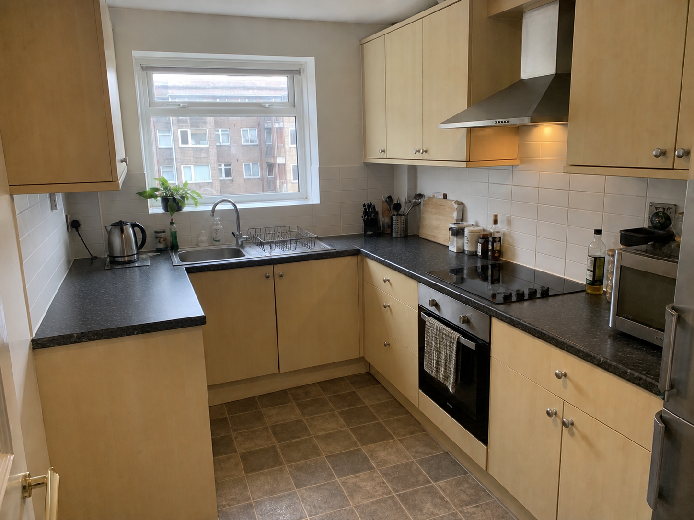
D-condition

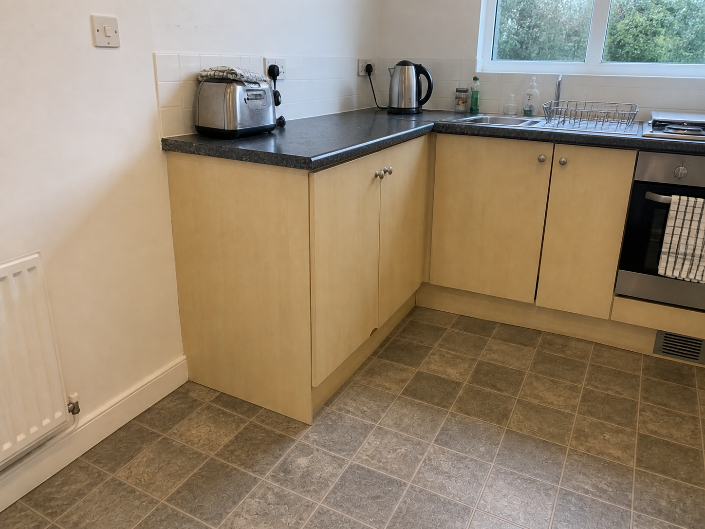
Enumerated changes (the gold)
- new defect — base unit door: small chipped paint area on the lower edge of the base unit doorD-condition
- item removed — countertop toaster: the toaster present on the worktop at T0 is absent at T1A-wide
- item added — dish rack: a small chrome dish rack is present beside the sink at T1 (retracted — t0 premise wrong: The dish rack is already present at T0; drop D3 or re-target it.)
- cleanliness — dark worktop: a few visible crumbs and water marks are present on the worktop at T1
- worsened — window blind: one slat is slightly bent and hangs lower than at T0A-wide
- immaterial — tea towel: the same one tea towel, same cotton material and same count remains on the same oven handle, with only its fold orientation changed (immaterial — reporting this is a false change) (retracted — t0 premise wrong: There is no tea towel at T0; D6 cannot be an immaterial re-fold.)
- observed — tea towel: A tea towel hangs on the oven handle at T1 and none is there at T0. (found after the render; scored so reporting it is not a false change)
- observed — cloth on toaster: A folded cloth sits on the toaster in T1 D-condition. (found after the render; scored so reporting it is not a false change)
What is actually visible
- D1 absent — The chipped base-unit door is not in the T1 D-condition frame at all, because that frame no longer shows the T0 door.
- D2 clear — The toaster is gone from the worktop in T1 A-wide.
- D3 absent — A chrome dish rack is already beside the sink at T0, so there is no added item.
- D4 ambiguous — Crumbs and water marks are not resolvable on the dark worktop at this scale.
- D5 absent — Every blind slat is straight at T1, as at T0.
- D6 absent — No tea towel hangs on the oven handle at T0; one appears at T1, so the 'unchanged tea towel' premise is wrong.
Gold corrections before scoring
- D3 t0 premise wrong — The dish rack is already present at T0; drop D3 or re-target it.
- D6 t0 premise wrong — There is no tea towel at T0; D6 cannot be an immaterial re-fold.
Asserted unchanged
- same pale units, dark worktop, sink, oven, hob, extractor hood and window
- same camera viewpoint, room shape, flooring and door positions
- no change to the visible radiator, skirting, sockets or ceiling light
Incidental — recorded, not counted against the pair
- tea towel: A tea towel hangs on the oven handle at T1 and none is there at T0.
- cloth on toaster: A folded cloth sits on the toaster in T1 D-condition.
P35-002-T1
Bathroom · temporalacceptroom identity holds
The owner's second calibration case. The bottle differences are exactly the kind of movable-object noise this rubric now records and does not act on.
A-wide

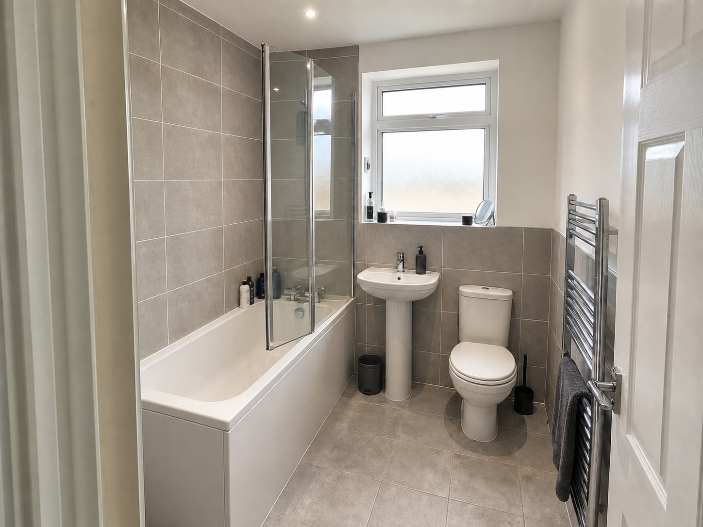
D-condition

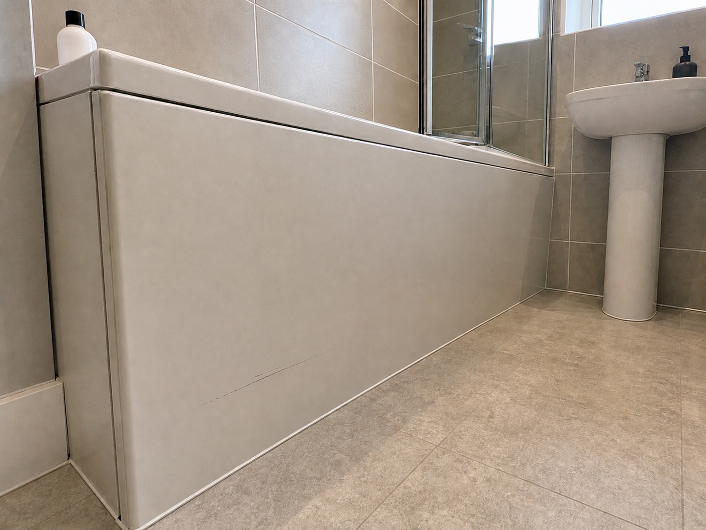
Enumerated changes (the gold)
- worsened — bath panel: the existing scuff on the bath panel is longer and darker than at T0D-condition
- new defect — silicone seal: a short split is visible in the silicone seal at the bath cornerD-condition
- item removed — blue bath mat: the blue bath mat present at T0 is absent at T1A-wide (retracted — t0 premise wrong: No bath mat exists at T0; drop D3.)
- item added — shampoo bottle: one plain shampoo bottle is newly present on the bath ledge
- cleanliness — lower wall tiles: light splash marks are visible on the lower wall tiles at T1
- item added — waste bin: a small plain waste bin is newly present beside the basinA-wide
- observed — toiletries: Bottles on the sill and bath ledge are arranged differently. (found after the render; scored so reporting it is not a false change)
What is actually visible
- D1 clear — The bath-panel scuff is genuinely longer and darker at T1; a short mark at T0 becomes a longer streaked mark. Confirmed on a full-resolution crop.
- D2 ambiguous — The silicone split is not resolvable at review scale.
- D3 absent — There is no blue bath mat in the T0 frame, so nothing was removed.
- D4 clear — A plain white bottle stands on the bath ledge at T1.
- D5 ambiguous — Splash marks on the lower tiles are not resolvable.
- D6 clear — A small dark waste bin stands beside the basin at T1.
Gold corrections before scoring
- D3 t0 premise wrong — No bath mat exists at T0; drop D3.
Asserted unchanged
- same white suite, grey wall tiles, glass screen, towel rail and window
- same bath, WC, basin, mirror, extractor and door positions
- no new sanitary fixture, no changed camera viewpoint and no changed room geometry
Incidental — recorded, not counted against the pair
- toiletries: Bottles on the sill and bath ledge are arranged differently.
- camera: The T1 A-wide framing is slightly closer than T0.
P35-003-T1
Kitchen · temporalacceptroom identity holds
Oven, hob, splashback, sockets and unit runs all hold position on a full-resolution crop of the D-condition frame.
A-wide

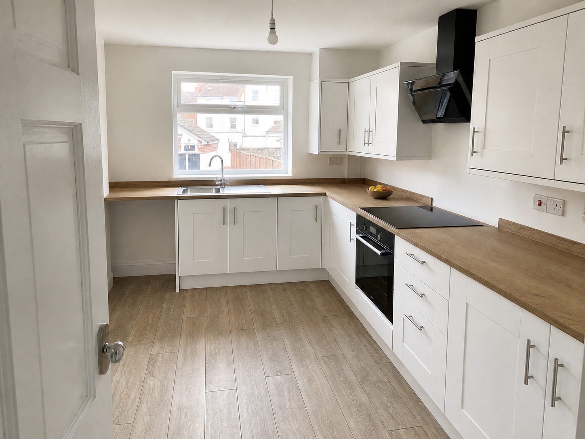
D-condition

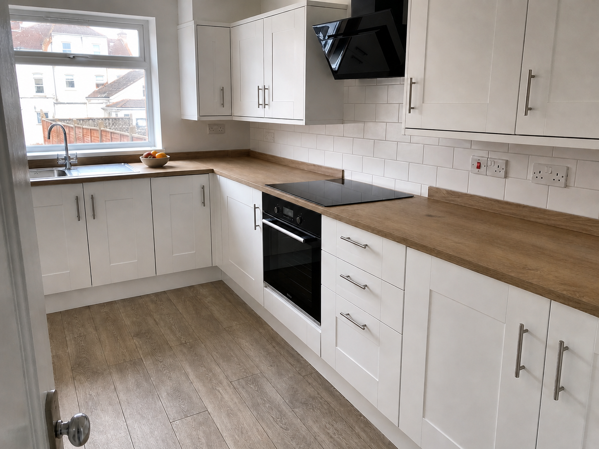
Enumerated changes (the gold)
- new defect — oak-effect worktop: a narrow dark burn mark is visible beside the hobD-condition
- item removed — countertop kettle: the kettle present at T0 is absent from the worktop at T1A-wide (retracted — t0 premise wrong: No kettle at T0; drop D2.)
- item added — fruit bowl: a small bowl of fruit is present on the worktop at T1
- cleanliness — ceramic hob: a faint greasy smear is visible on the ceramic hob at T1
- worsened — splashback grout: one grout line behind the hob is darker and more discoloured than at T0D-condition
- item removed — oven mitt: the oven mitt hanging by the cooker at T0 is absent at T1A-wide (retracted — t0 premise wrong: No oven mitt at T0; drop D6.)
What is actually visible
- D1 ambiguous — A burn mark beside the hob is not resolvable.
- D2 absent — No kettle stands on the worktop at T0.
- D3 clear — A bowl of fruit sits on the worktop at T1 in both views.
- D4 ambiguous — A greasy smear on the black hob is not resolvable.
- D5 ambiguous — Grout discolouration behind the hob is not resolvable.
- D6 absent — No oven mitt hangs by the cooker at T0.
Gold corrections before scoring
- D2 t0 premise wrong — No kettle at T0; drop D2.
- D6 t0 premise wrong — No oven mitt at T0; drop D6.
Asserted unchanged
- same white shaker units, oak-effect worktop, black appliances, sink, oven and rear window
- same room shape, floor, door, sockets and camera viewpoint
- no change to the radiator, blind, skirting or ceiling light
Incidental — recorded, not counted against the pair
- camera: Both T1 views sit slightly further right than T0.
P35-004-T1
Kitchen · temporalacceptroom identity holds
At composite scale the freestanding cooker looked like a different model; a full-resolution crop shows the same double-oven cooker, control panel and wall units. No identity finding.
A-wide
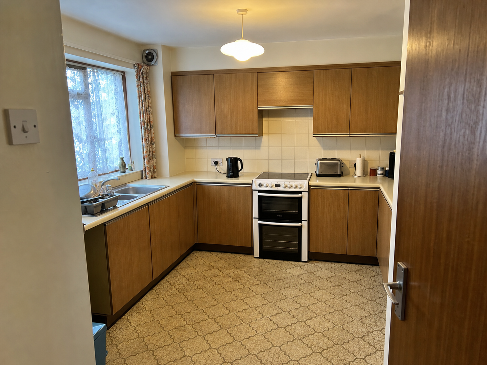
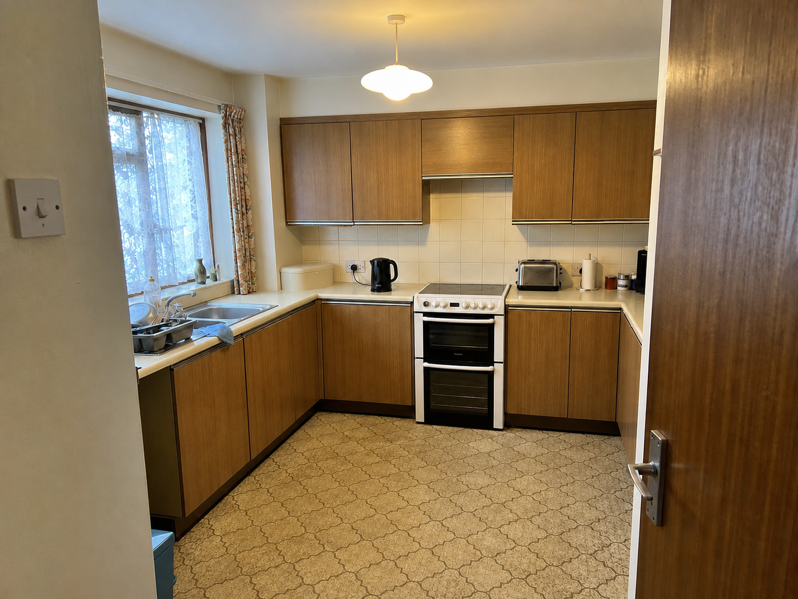
D-condition
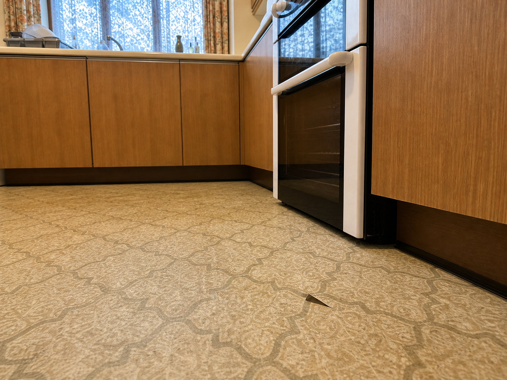
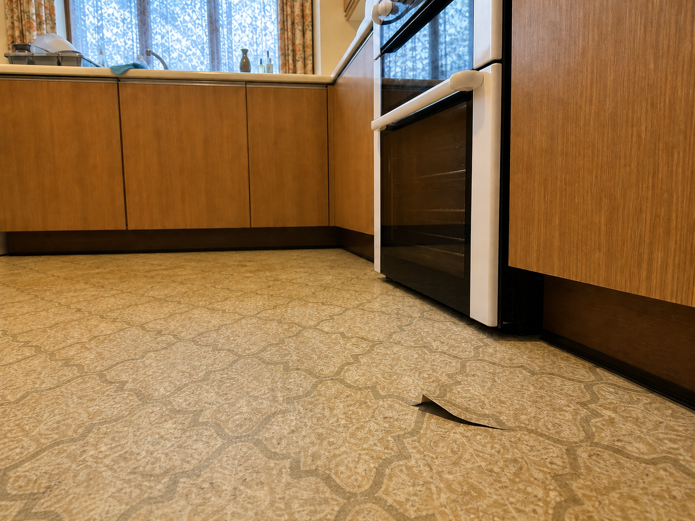
Enumerated changes (the gold)
- worsened — vinyl floor tear: the triangular tear beside the cooker is wider and its edge is liftedD-condition
- item removed — wall clock: the wall clock visible at T0 is absent at T1A-wide
- item added — dishcloth: a blue dishcloth is newly present beside the sink
- new defect — base unit plinth: a small dent is visible in the plinth beneath the sinkD-condition
- cleanliness — cream laminate worktop: two small water marks and crumbs are visible on the worktop at T1
- item added — bread bin: a plain bread bin is newly present on the worktopA-wide
What is actually visible
- D1 clear — The triangular vinyl tear is wider at T1 with a lifted edge.
- D2 clear — The round wall clock above the window at T0 is gone at T1.
- D3 clear — A blue dishcloth lies beside the sink at T1.
- D4 ambiguous — A plinth dent is not resolvable.
- D5 ambiguous — Water marks and crumbs on the cream worktop are not resolvable.
- D6 clear — A cream bread bin stands on the left-hand worktop at T1.
Asserted unchanged
- same wood-effect units, cream laminate worktop, freestanding cooker, sink and patterned floor
- same wall clock location is empty but all other walls, radiator, blind and door remain unchanged
- no other furniture, fitting, finish or camera position changes
Incidental — recorded, not counted against the pair
- camera: The T1 A-wide framing is marginally tighter.
P35-005-T1
Bathroom · temporalacceptroom identity holds
Checked on a full-resolution crop: single fixed shower screen, basin form and chrome mixer all unchanged — unlike its counterfactual sibling P35-022-CF.
A-wide
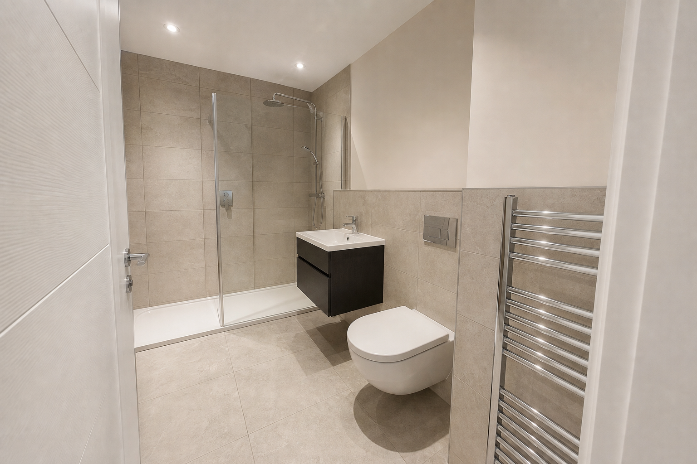
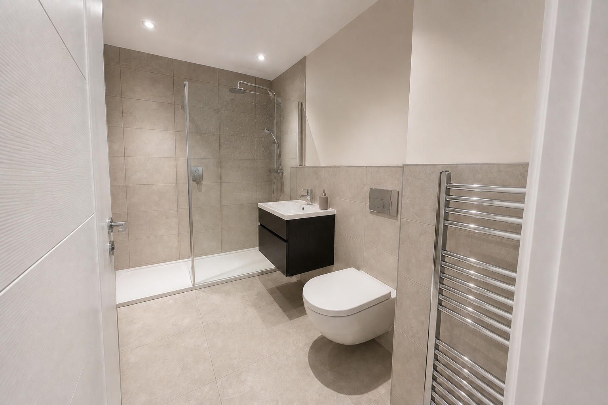
D-condition
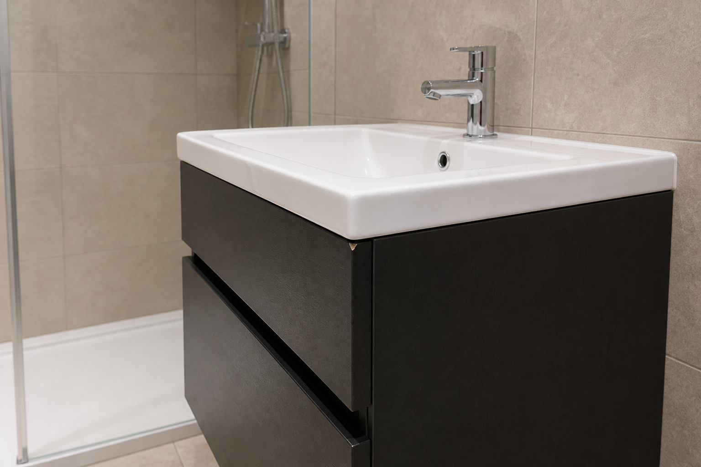
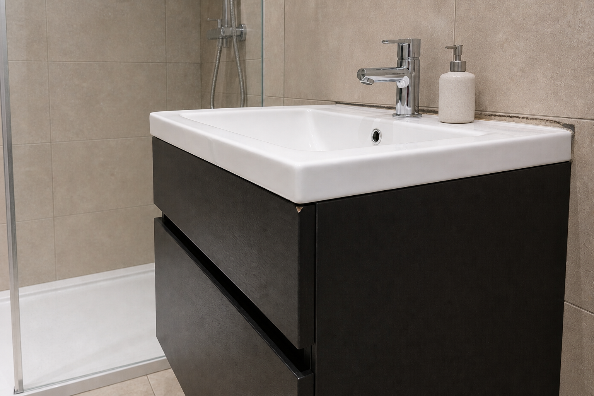
Enumerated changes (the gold)
- new defect — vanity drawer front: a small chip is newly visible on the upper corner of the vanity drawerD-condition
- item removed — small bath mat: the bath mat visible at T0 is absent at T1A-wide (retracted — t0 premise wrong: No bath mat at T0; drop D2.)
- item added — soap dispenser: a plain soap dispenser is newly present beside the basin
- cleanliness — glass shower screen: a few water spots are visible on the shower glass at T1
- worsened — silicone joint: the existing discolouration along the vanity silicone joint is darkerD-condition
- item removed — bath shelf: the small shelf visible beside the basin at T0 is absent at T1A-wide (retracted — t0 premise wrong: No shelf at T0; drop D6.)
What is actually visible
- D1 ambiguous — A chip on the vanity drawer corner is not resolvable.
- D2 absent — No bath mat is present at T0.
- D3 clear — A soap dispenser stands beside the basin at T1 in both views.
- D4 clear — Water spotting is visible on the shower glass at T1.
- D5 ambiguous — Silicone discolouration is not resolvable.
- D6 absent — No shelf is present beside the basin at T0.
Gold corrections before scoring
- D2 t0 premise wrong — No bath mat at T0; drop D2.
- D6 t0 premise wrong — No shelf at T0; drop D6.
Asserted unchanged
- same white suite, pale stone tiles, walk-in shower, glass screen, vanity and chrome towel rail
- same window, door, mirror, extractor, floor drain and camera viewpoint
- no extra sanitary fixture and no changed room geometry
Incidental — recorded, not counted against the pair
- camera: The T1 A-wide view is pulled back, showing more of the door.
P35-006-T1
Shower room · temporalacceptroom identity holds
A-wide
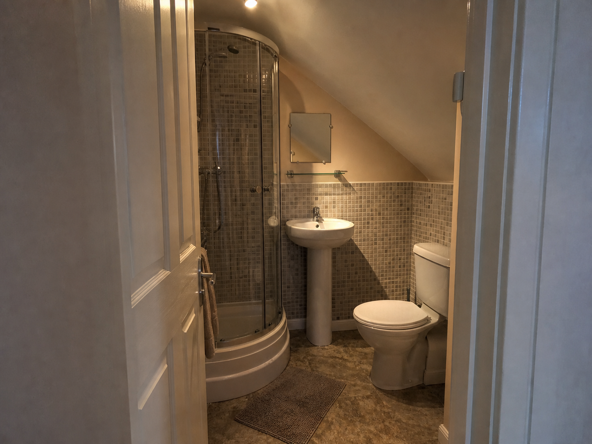
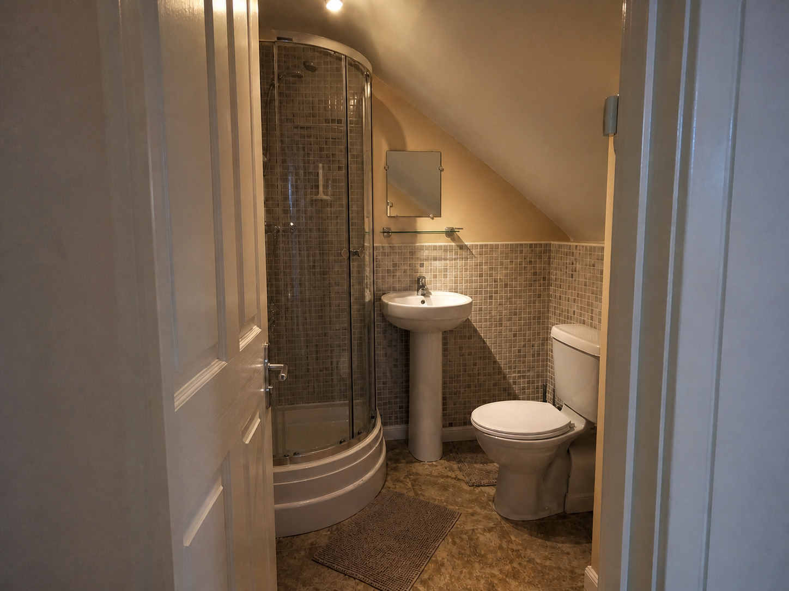
D-condition
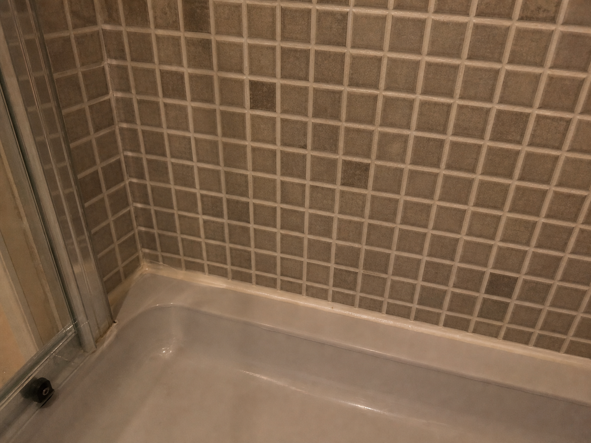
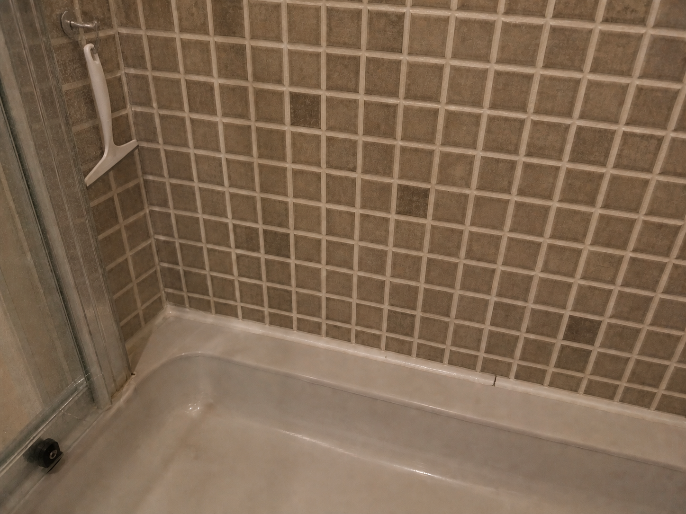
Enumerated changes (the gold)
- new defect — mosaic wall grout: a short cracked grout section is visible beside the shower trayD-condition
- item removed — towel ring: the towel ring visible beside the basin at T0 is absent at T1A-wide
- item added — shower squeegee: a small squeegee is newly hanging inside the shower enclosure
- cleanliness — shower glass: light water spotting is visible on the shower glass at T1
- worsened — vinyl floor: a faint scuff near the basin is longer and darker than at T0D-condition
- item added — bath mat: a small bath mat is newly present beside the basinA-wide (retracted — t0 premise wrong: A mat exists at T0; re-state D6 as moved, or drop it.)
- observed — bath mat: The existing mat is larger and lies differently at T1. (found after the render; scored so reporting it is not a false change)
What is actually visible
- D1 ambiguous — Cracked grout beside the tray is not resolvable.
- D2 clear — The towel ring and towel on the door-side wall at T0 are gone at T1.
- D3 clear — A squeegee hangs inside the enclosure at T1.
- D4 ambiguous — Light water spotting is not separable from reflections.
- D5 ambiguous — A vinyl scuff near the basin is not resolvable.
- D6 absent — A bath mat is already on the floor at T0; it is larger and moved at T1 but not newly present.
Gold corrections before scoring
- D6 t0 premise wrong — A mat exists at T0; re-state D6 as moved, or drop it.
Asserted unchanged
- same sloped ceiling, compact shower, pedestal basin, WC, mosaic tiles and vinyl floor
- same door, mirror, towel ring location, extractor, shower controls and camera viewpoint
- no extra sanitary fixture or changed room shape
Incidental — recorded, not counted against the pair
- bath mat: The existing mat is larger and lies differently at T1.
- camera: The T1 framing is slightly tighter.
P35-007-T1
Bedroom · temporalacceptroom identity holds
A-wide
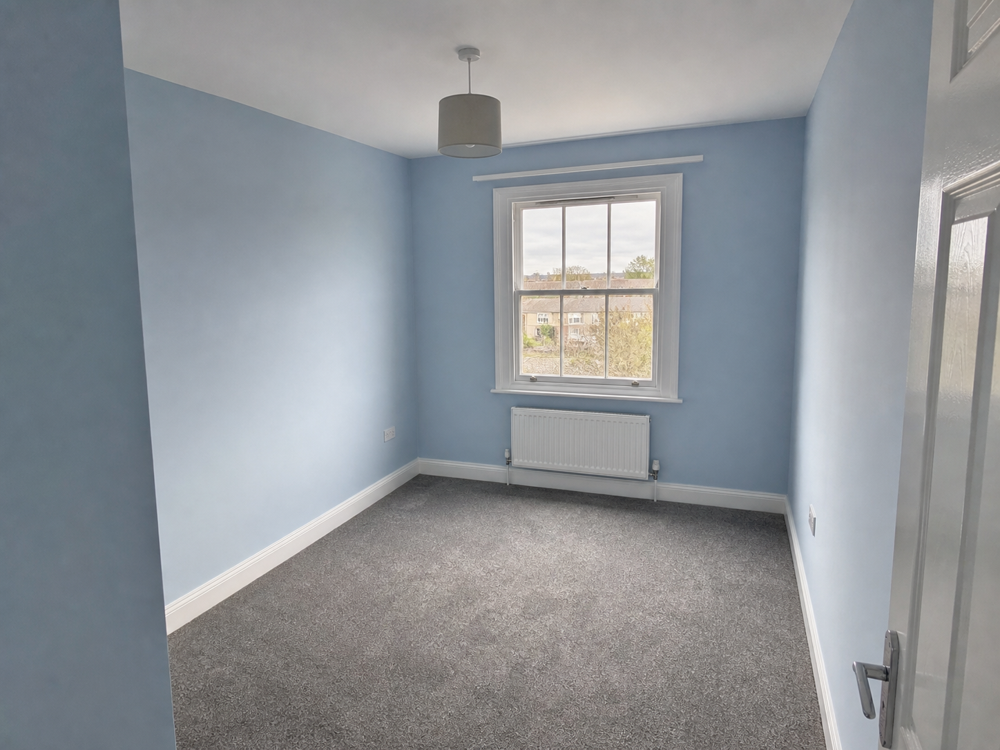
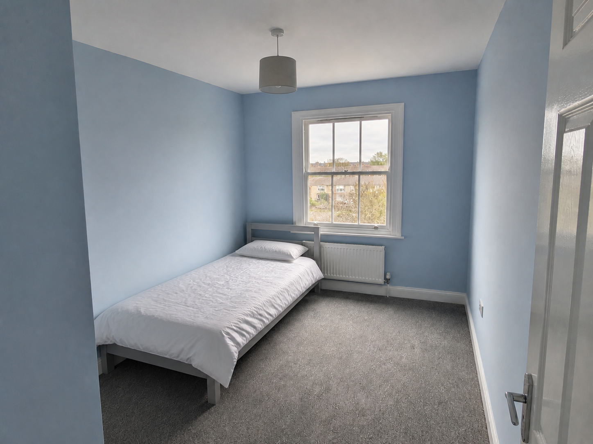
D-condition
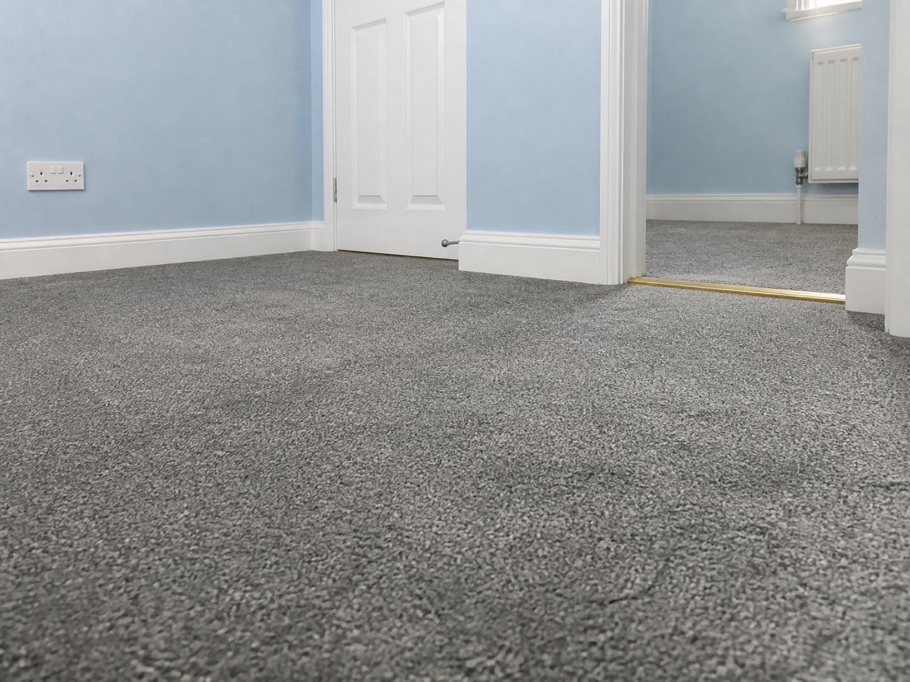
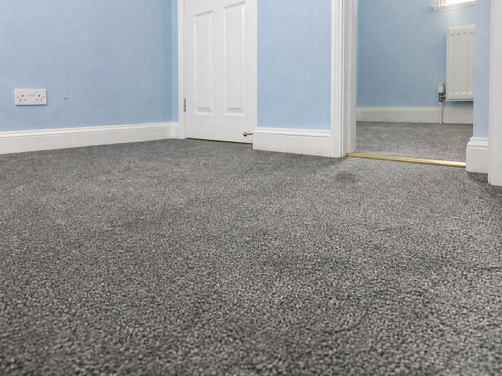
Enumerated changes (the gold)
- new defect — grey carpet: a small dark stain is visible near the doorwayD-condition (retracted — not rendered: No stain was rendered; drop D1 or re-shoot.)
- item added — single bed: a simple single bed is newly present against the far wallA-wide
- item removed — curtain pole: the curtain pole visible at T0 is absent at T1A-wide
- cleanliness — skirting board: a visible dusty mark runs along the skirting beside the doorwayD-condition
- worsened — painted wall: a small scuff near the light switch is darker than at T0
- immaterial — ceiling pendant: the same one ceiling pendant, same material and same count remains in the same position, with only its shade orientation slightly changed (immaterial — reporting this is a false change)
- observed — door leaf: The bedroom door stands at a different opening angle at T1. (found after the render; scored so reporting it is not a false change)
What is actually visible
- D1 absent — The carpet by the doorway carries no stain at T1.
- D2 clear — A made single bed stands against the far wall at T1.
- D3 clear — The curtain pole above the sash window at T0 is gone at T1.
- D4 ambiguous — A dusty mark on the skirting is not resolvable.
- D5 ambiguous — No light switch is in frame, so the wall scuff cannot be judged.
- D6 clear — The same single pendant remains in the same position.
Gold corrections before scoring
- D1 not rendered — No stain was rendered; drop D1 or re-shoot.
Asserted unchanged
- same pale blue walls, grey carpet, white radiator, sash window and doorway
- same wardrobe, sockets, skirting, threshold and camera viewpoint
- no change to window geometry, room dimensions or radiator position
Incidental — recorded, not counted against the pair
- door leaf: The bedroom door stands at a different opening angle at T1.
P35-008-T1
Bedroom · temporalacceptroom identity holds
A-wide
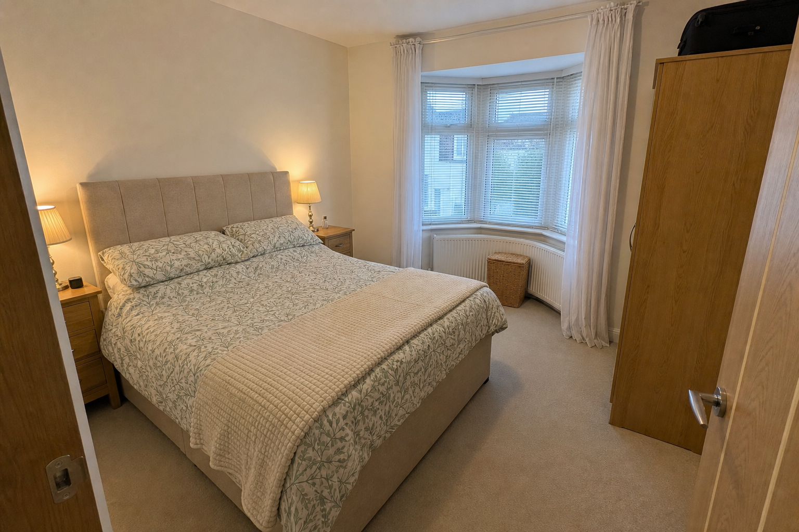
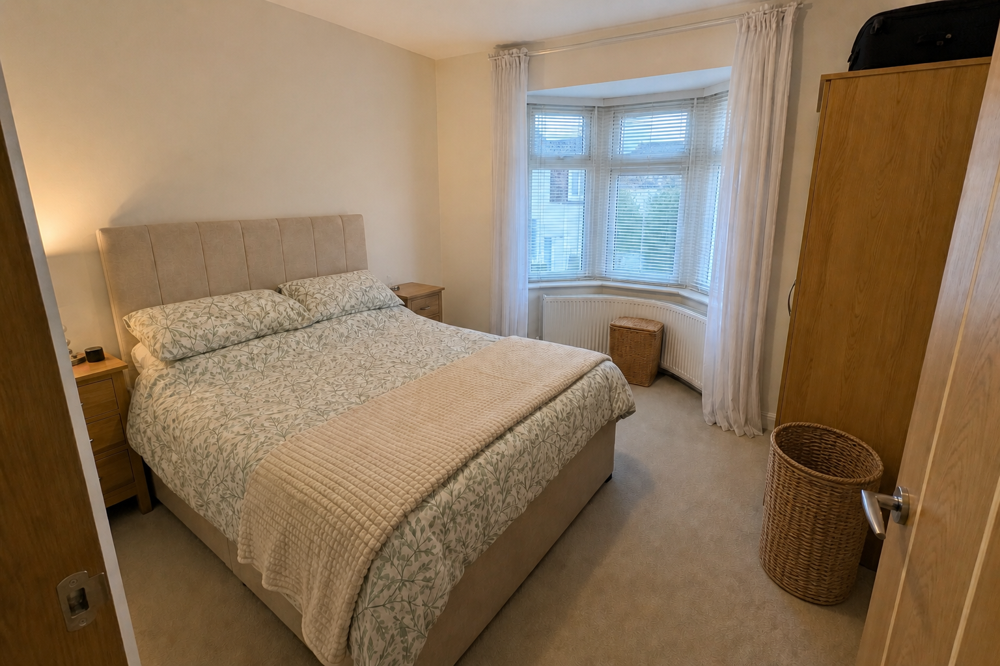
D-condition
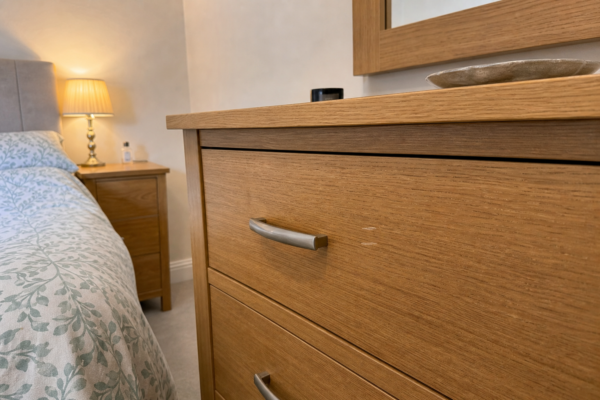
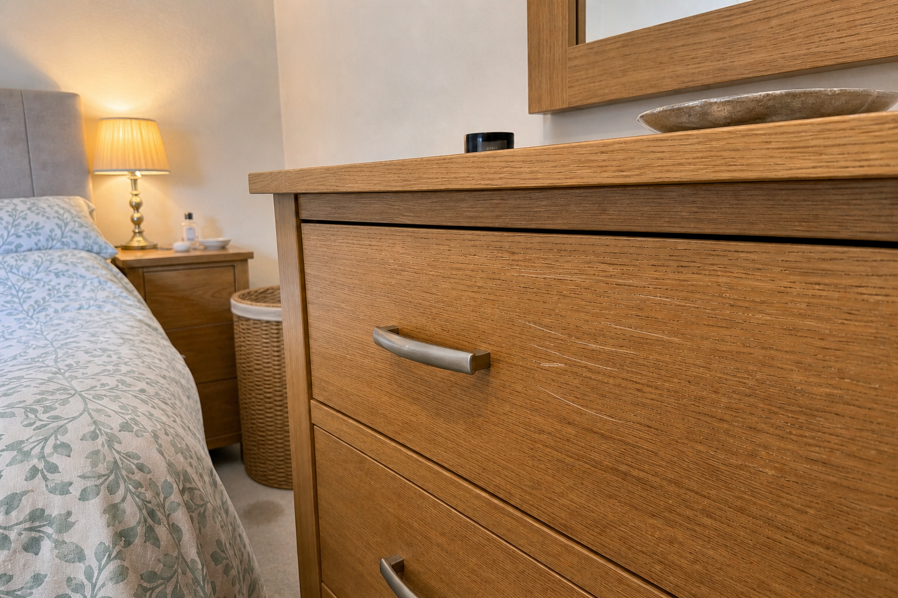
Enumerated changes (the gold)
- worsened — top drawer: the scratches beside the top drawer handle are longer and more numerousD-condition
- item removed — bedside lamp: the bedside lamp visible at T0 is absent at T1A-wide
- item added — laundry basket: a woven laundry basket is newly present beside the wardrobe
- new defect — cream carpet: a small flattened dark patch is visible beside the bedD-condition
- cleanliness — bedside table: a few loose items and a visible dust mark are present on the bedside table
- item added — bedside book: a single plain book is newly present on the bedside tableA-wide
- observed — bay blinds: The bay-window blinds sit at a slightly different slat angle. (found after the render; scored so reporting it is not a false change)
What is actually visible
- D1 ambiguous — Scratches beside the drawer handle are not resolvable in this pair.
- D2 clear — The right-hand bedside lamp at T0 is gone at T1.
- D3 clear — A woven laundry basket stands beside the wardrobe at T1.
- D4 ambiguous — A flattened carpet patch is not resolvable.
- D5 clear — A small dish and loose items appear on the bedside table.
- D6 clear — A plain book lies on the bedside table at T1.
Asserted unchanged
- same double bed, headboard, oak wardrobes, cream carpet and bay window
- same chest of drawers, mirror, radiator, curtains, sockets and camera viewpoint
- no change to room shape, door, floor finish or window geometry
Incidental — recorded, not counted against the pair
- bay blinds: The bay-window blinds sit at a slightly different slat angle.
P35-009-T1
Bedroom · temporalacceptroom identity holds
Views disagree at the same timepoint
The desk chair is absent in T1 A-wide (D2) but still present in T1 D-condition. D2 is scoped to A-wide, so scoring must stay view-aware.
A-wide
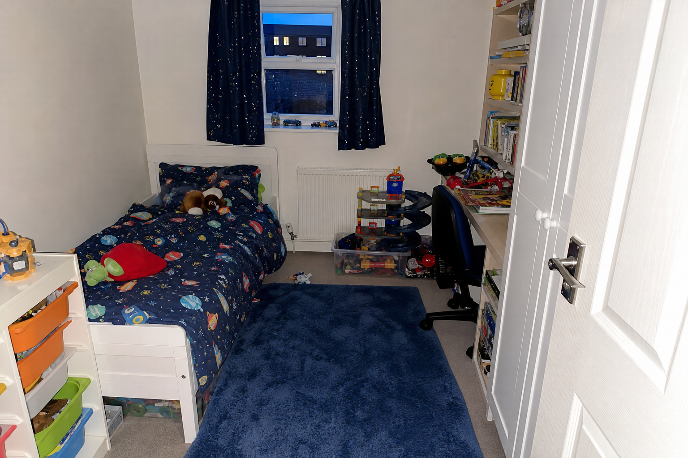
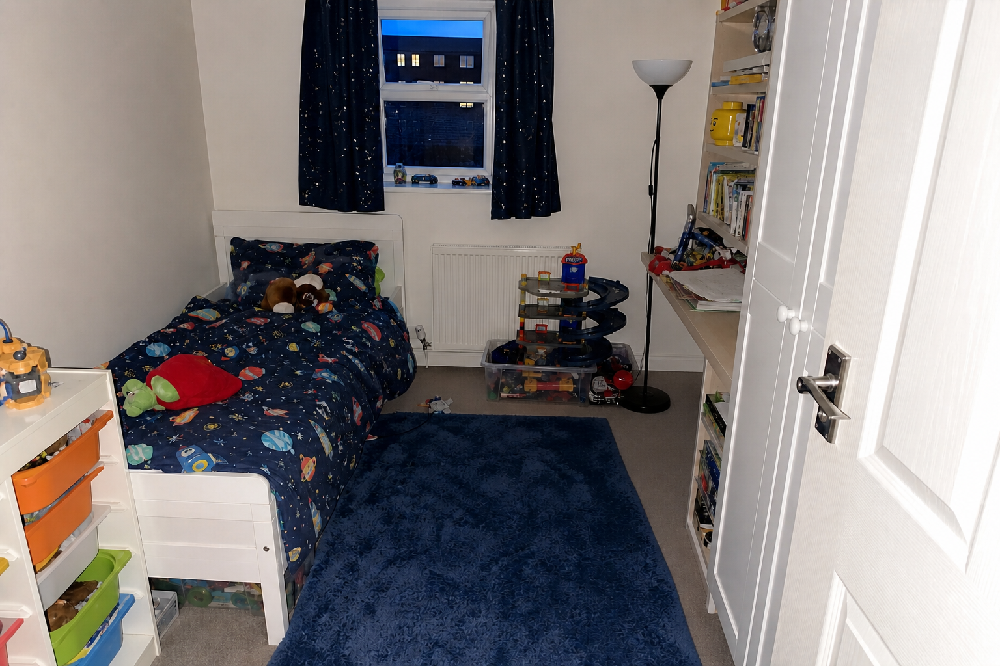
D-condition
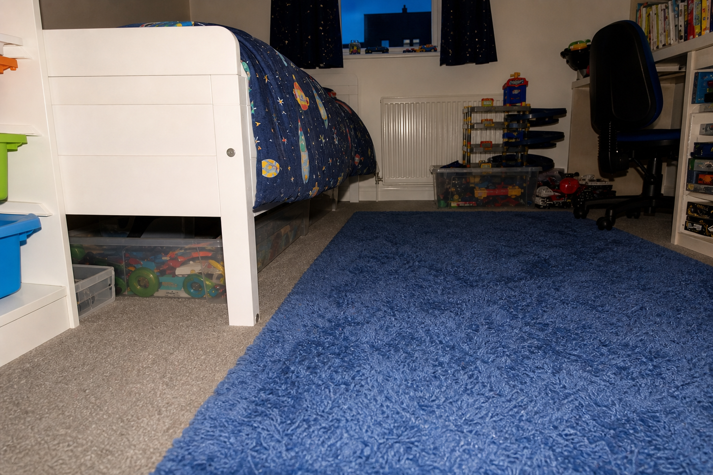
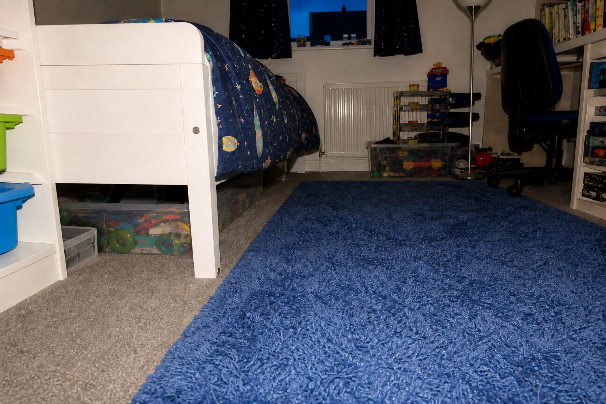
Enumerated changes (the gold)
- new defect — window reveal: a small water mark is visible on the lower painted window revealD-condition
- item removed — desk chair: the desk chair present at T0 is absent at T1A-wide
- item added — floor lamp: a plain floor lamp is newly present beside the desk
- cleanliness — desk surface: papers and a light dust mark are visible on the desk at T1
- worsened — door edge: the small rub mark on the door edge is darker than at T0D-condition
- item removed — bedside book: the book present on the bedside table at T0 is absent at T1A-wide (retracted — t0 premise wrong: No bedside book at T0; drop D6.)
What is actually visible
- D1 ambiguous — A water mark on the window reveal is not resolvable.
- D2 clear — The desk chair is gone from the A-wide frame at T1.
- D3 clear — A black floor lamp stands beside the desk at T1.
- D4 clear — Papers lie on the desk at T1.
- D5 ambiguous — A rub on the door edge is not resolvable.
- D6 absent — No bedside table or book is in either T0 frame.
Gold corrections before scoring
- D6 t0 premise wrong — No bedside book at T0; drop D6.
Asserted unchanged
- same room layout, painted walls, carpet, window, desk, radiator and built-in storage
- same sockets, door, skirting, light fitting and camera viewpoint
- no other furniture, fitting or finish changes
P35-010-T1
Living room · temporalacceptroom identity holds
A-wide
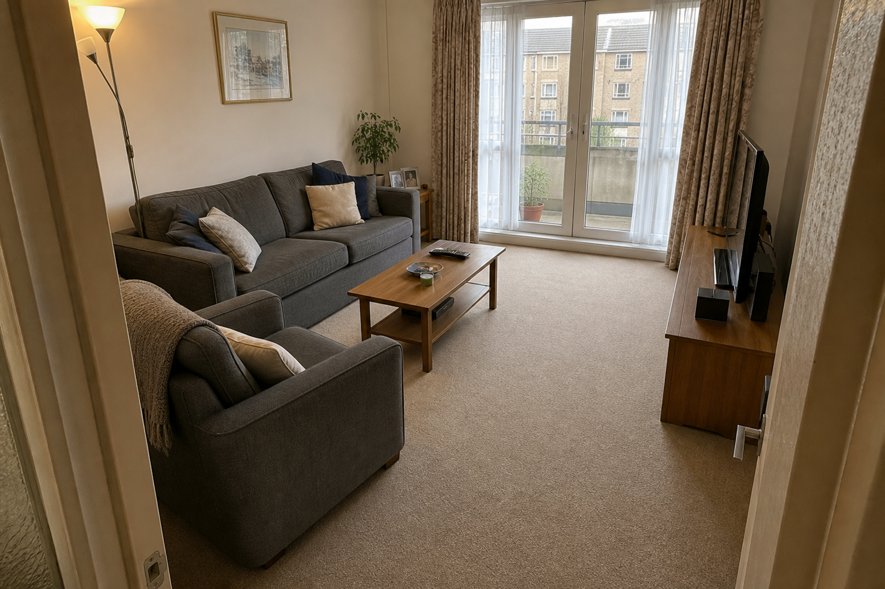
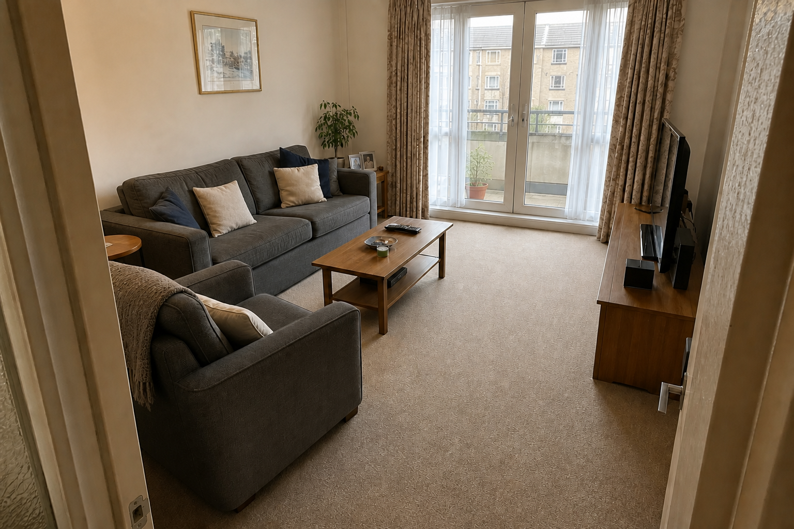
D-condition
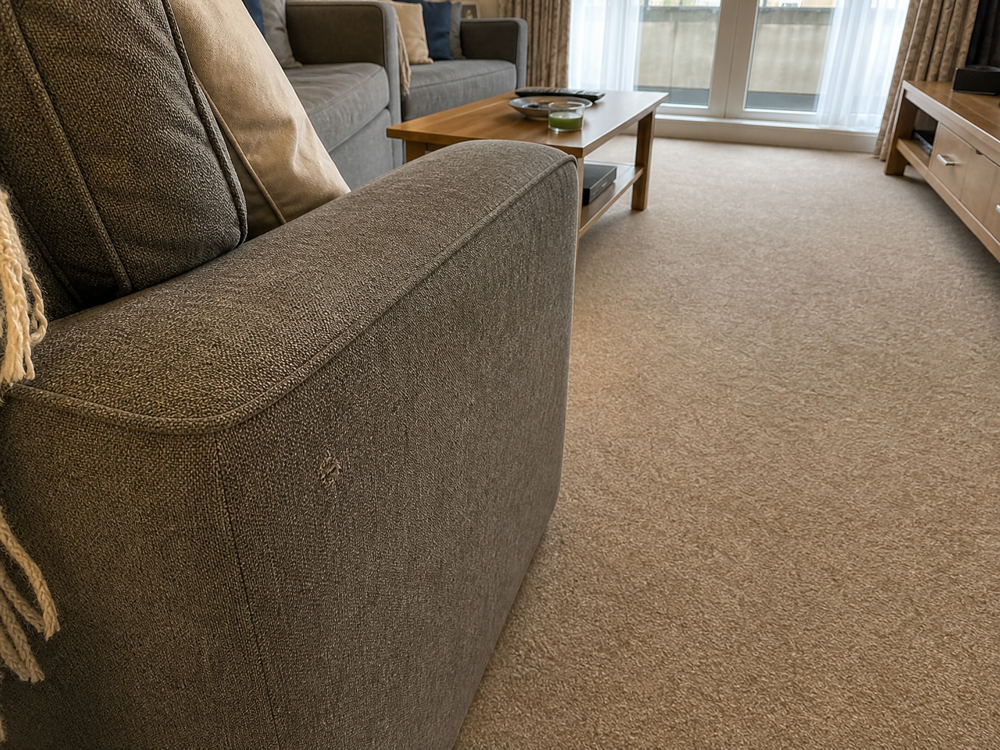
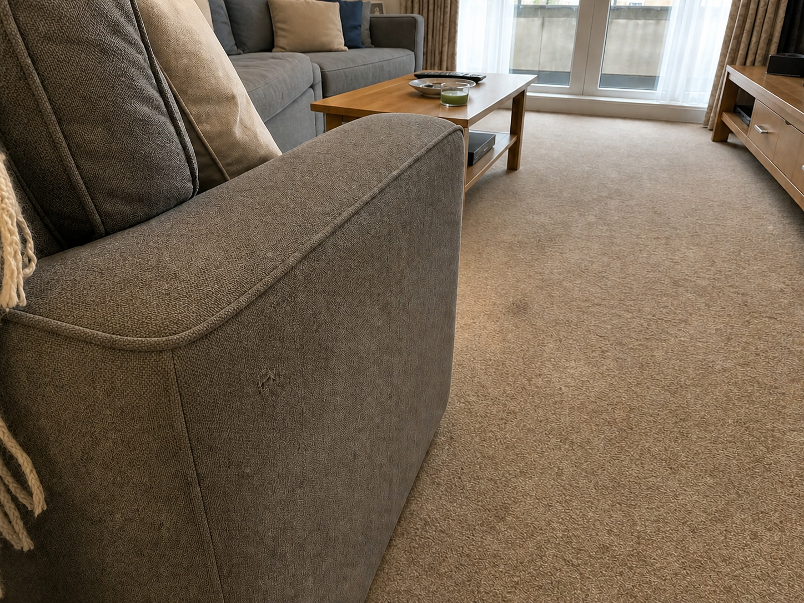
Enumerated changes (the gold)
- new defect — grey sofa arm: a small dark mark is visible on the front of the sofa armD-condition
- item removed — floor lamp: the floor lamp present at T0 is absent at T1A-wide
- item added — side table: a small round side table is newly present beside the sofaA-wide
- cleanliness — oak coffee table: a few visible rings and crumbs are present on the coffee table at T1
- worsened — carpet: the existing faint carpet mark near the coffee table is darkerD-condition
- immaterial — scatter cushions: the same two scatter cushions, same materials and same count remain on the same sofa, with only their order along the seat changed (immaterial — reporting this is a false change)
- observed — oak coffee table: The coffee table sits further right at T1. (found after the render; scored so reporting it is not a false change)
What is actually visible
- D1 ambiguous — A comparable mark is already on the sofa arm at T0.
- D2 clear — The floor lamp at T0 is gone at T1.
- D3 clear — A small round side table stands beside the sofa at T1.
- D4 ambiguous — Rings and crumbs are not separable from the existing tableware.
- D5 ambiguous — The carpet mark is not resolvable.
- D6 clear — The same two scatter cushions remain.
Asserted unchanged
- same grey sofa, armchair, oak coffee table, television unit, television and cream throw
- same carpet, wall, glazing, balcony view, door positions and camera viewpoint
- no change to visible exterior balcony items, room shape or furniture upholstery
Incidental — recorded, not counted against the pair
- oak coffee table: The coffee table sits further right at T1.
- camera: The T1 A-wide framing is slightly wider.
P35-011-T1
Living room · temporalacceptroom identity holds
Identity holds, but only one enumerated change is observable: this pair carries thin delta signal and should be weighted accordingly.
A-wide
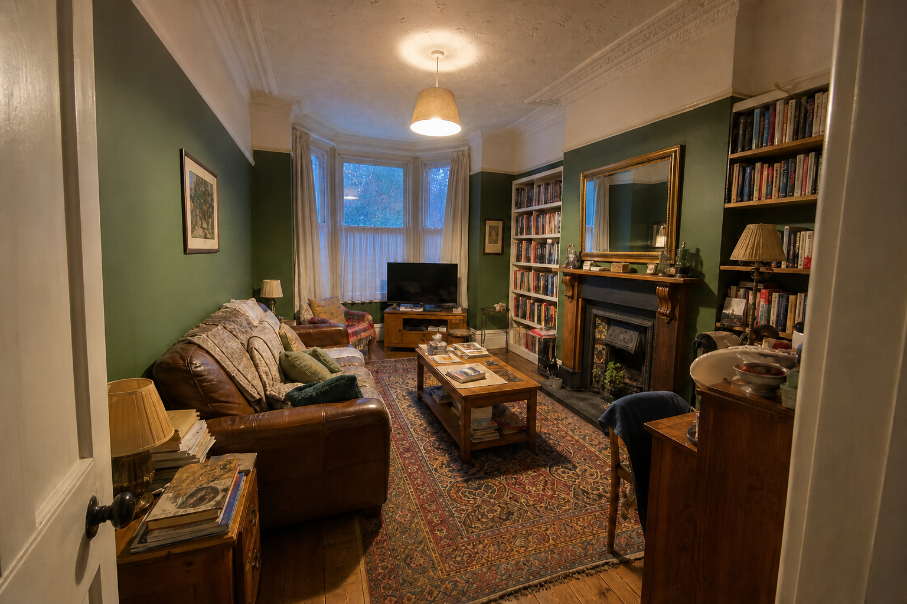
D-condition
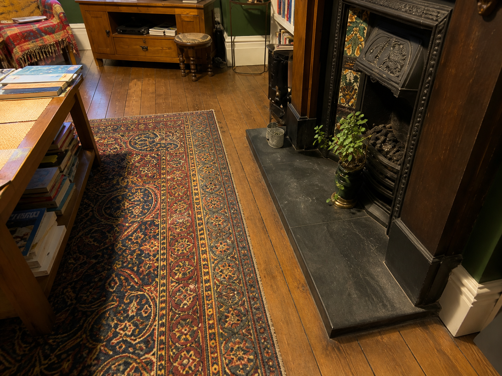
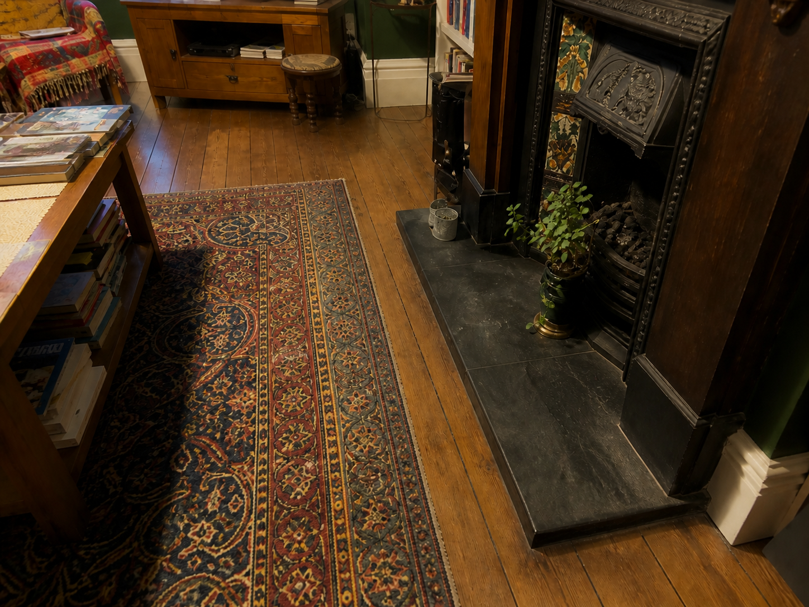
Enumerated changes (the gold)
- worsened — armchair upholstery: a small existing pull in the upholstery is longer at T1D-condition
- item removed — television remote: the remote control visible on the coffee table at T0 is absentA-wide
- item added — magazine stack: a small stack of magazines is newly present on the coffee table
- new defect — painted skirting: a short scuff is newly visible on the skirting by the doorD-condition
- cleanliness — television unit: a visible dust line is present on the television unit at T1
- item added — television remote: a television remote is newly present on the coffee tableA-wide
What is actually visible
- D1 ambiguous — A pull in the armchair upholstery is not resolvable.
- D2 ambiguous — The remote is too small to track on the cluttered table.
- D3 clear — A stack of magazines and an open book sit on the coffee table at T1.
- D4 ambiguous — A skirting scuff by the door is not resolvable.
- D5 ambiguous — A dust line on the television unit is not resolvable.
- D6 ambiguous — A newly present remote cannot be separated from D2.
Asserted unchanged
- same living room layout, sofa, armchair, coffee table, television unit, television and carpet
- same glazing, window, door, walls, skirting and camera viewpoint
- no change to furniture count, upholstery colour or room geometry
Incidental — recorded, not counted against the pair
- camera: The T1 D-condition view is shifted right and slightly closer.
P35-012-T1
Living room · temporalacceptroom identity holds
A-wide
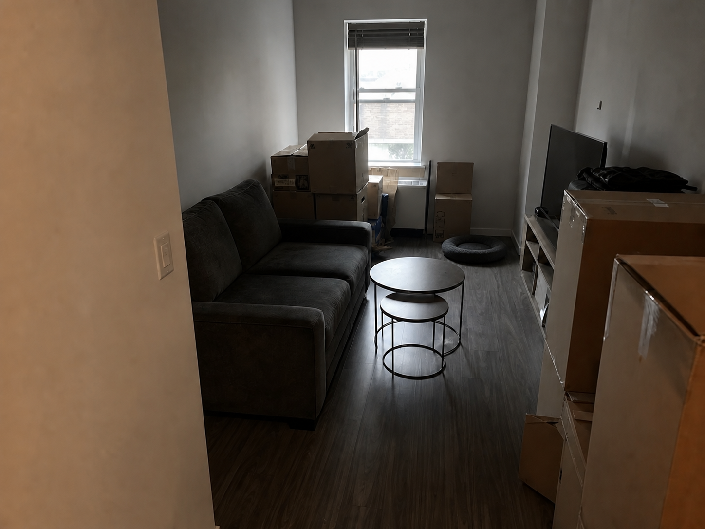
D-condition
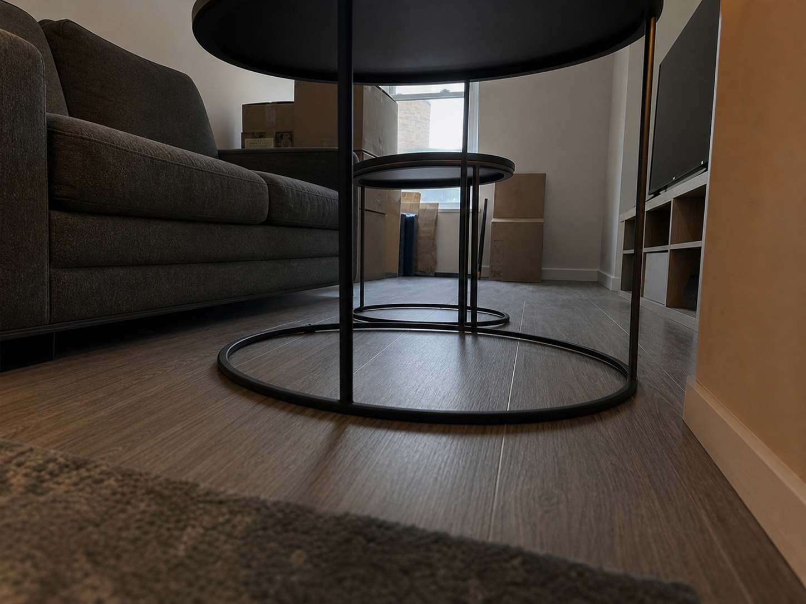
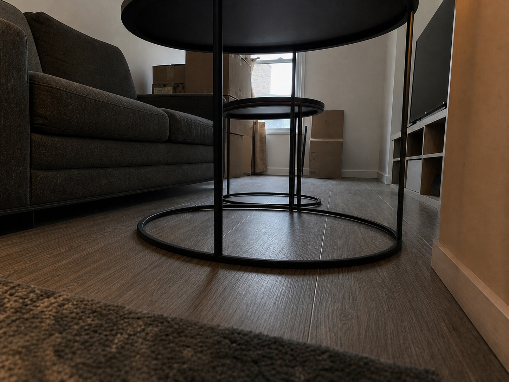
Enumerated changes (the gold)
- new defect — window sill: a small chip is visible on the painted window sillD-condition
- item removed — plant pot: the plant pot present on the sill at T0 is absent at T1A-wide (retracted — t0 premise wrong: No plant pot at T0; drop D2.)
- item added — floor cushion: one floor cushion is newly present beside the armchairA-wide
- cleanliness — window glass: finger marks are visible on the lower part of the window glass at T1
- worsened — door leaf: the existing scuff on the lower door leaf is darker and longerD-condition
- immaterial — curtain panel: the same one curtain panel, same fabric and same count remains on the same window, only gathered to a different width (immaterial — reporting this is a false change) (retracted — t0 premise wrong: The room has no curtain; drop D6.)
What is actually visible
- D1 ambiguous — A chip on the window sill is not resolvable.
- D2 absent — No plant pot stands on the sill at T0; the sill carries packing boxes.
- D3 clear — A round floor cushion lies beside the shelving at T1.
- D4 ambiguous — Finger marks on the glass are not resolvable.
- D5 ambiguous — No door leaf is in frame.
- D6 absent — The window has a blind, not a curtain panel.
Gold corrections before scoring
- D2 t0 premise wrong — No plant pot at T0; drop D2.
- D6 t0 premise wrong — The room has no curtain; drop D6.
Asserted unchanged
- same sofa, armchair, coffee table, television unit, carpet, window and door
- same wall finish, skirting, sockets, radiator and camera viewpoint
- no change to visible exterior view, furniture layout or room shape
P35-013-T1
Entrance hall · temporalacceptroom identity holds
A-wide
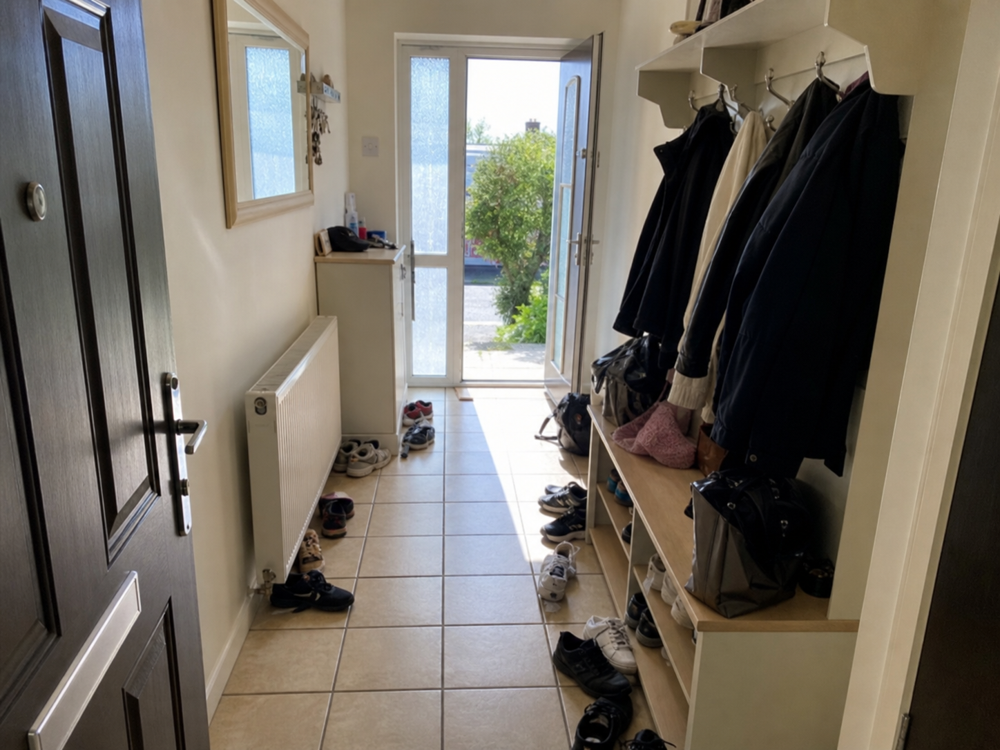
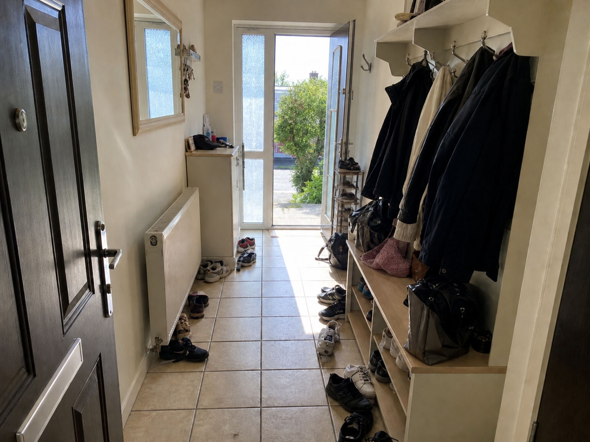
D-condition
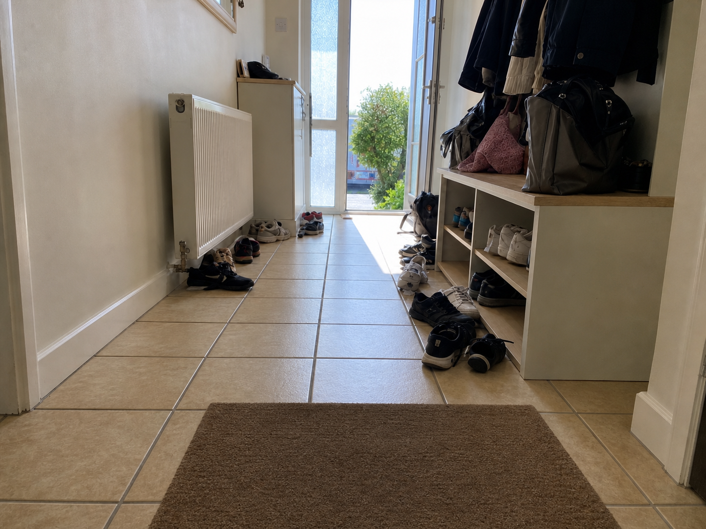
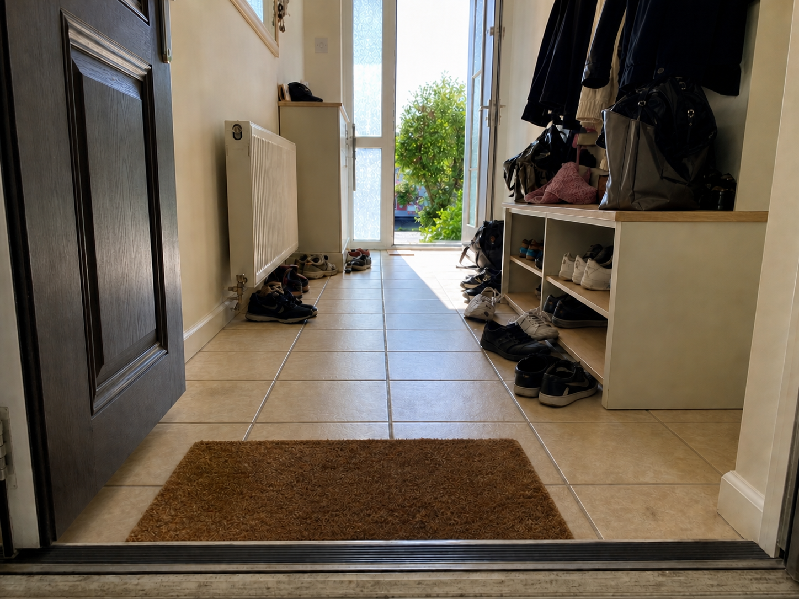
Enumerated changes (the gold)
- new defect — hall skirting: a small chip is newly visible on the skirting near the entranceD-condition
- item removed — umbrella stand: the umbrella stand visible at T0 is absent at T1A-wide (retracted — t0 premise wrong: No umbrella stand at T0; drop D2.)
- item added — shoe rack: a narrow shoe rack is newly present beside the doorA-wide
- cleanliness — vinyl floor: several muddy marks are visible on the entrance floor at T1
- worsened — door threshold: the existing rub at the threshold is darker and more wornD-condition
- item added — coat hook: a single coat hook is newly present beside the entrance doorA-wide
- observed — shoes: Shoes on the floor and rack are rearranged, added and removed. (found after the render; scored so reporting it is not a false change)
What is actually visible
- D1 ambiguous — A skirting chip is not resolvable.
- D2 absent — No umbrella stand is in the T0 frame.
- D3 clear — A narrow shoe rack stands near the glazed door at T1.
- D4 ambiguous — Muddy marks are not separable from the tile pattern.
- D5 ambiguous — Threshold wear is not resolvable.
- D6 ambiguous — Coat hooks are already present at T0; a single added hook cannot be isolated.
Gold corrections before scoring
- D2 t0 premise wrong — No umbrella stand at T0; drop D2.
Asserted unchanged
- same entrance hall, front door, internal door, wall finish, floor and radiator
- same console table, mirror, light fitting, skirting and camera viewpoint
- no change to door positions, room geometry or fixed fittings
Incidental — recorded, not counted against the pair
- shoes: Shoes on the floor and rack are rearranged, added and removed.
P35-014-T1
Dining room · temporalacceptroom identity holds
The owner adjudicated this pair on 4 Aug as a reject because four changes were absent or ambiguous — a judgement on the enumerated axis, which the new rubric does not overturn. Room identity holds and three changes are observable, so under an identity-first bar the pair is usable with gold trimmed. One disagreement to note: the owner read D2 as absent; at full resolution the head-of-table chair is clearly gone.
A-wide
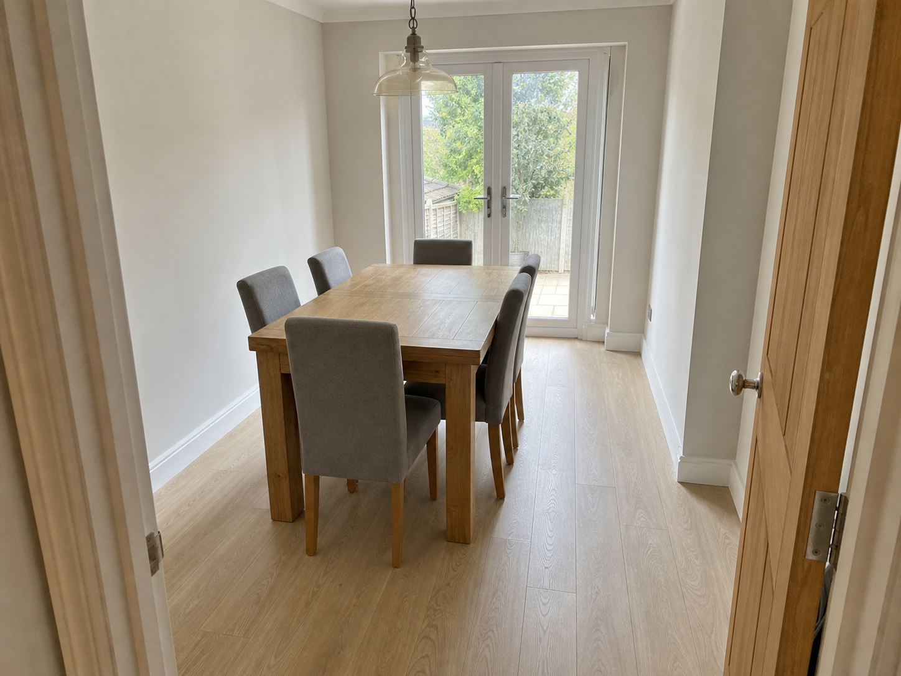
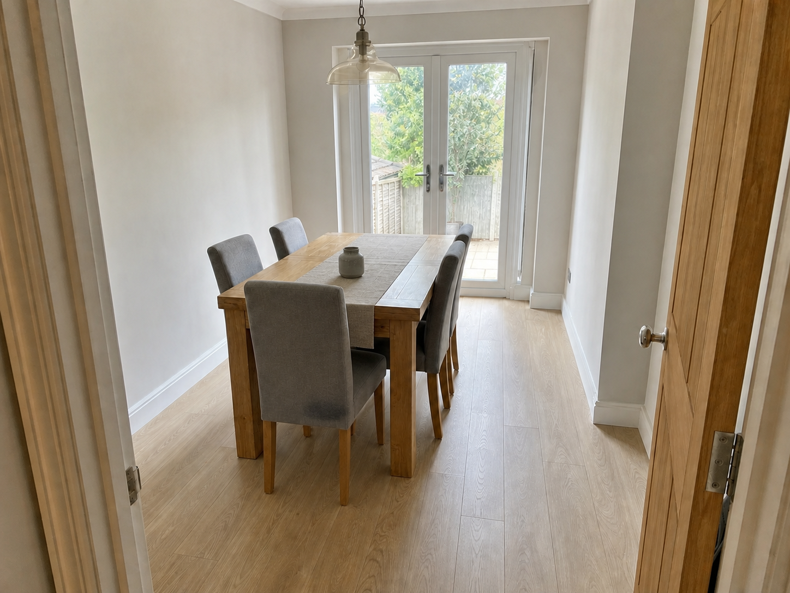
D-condition
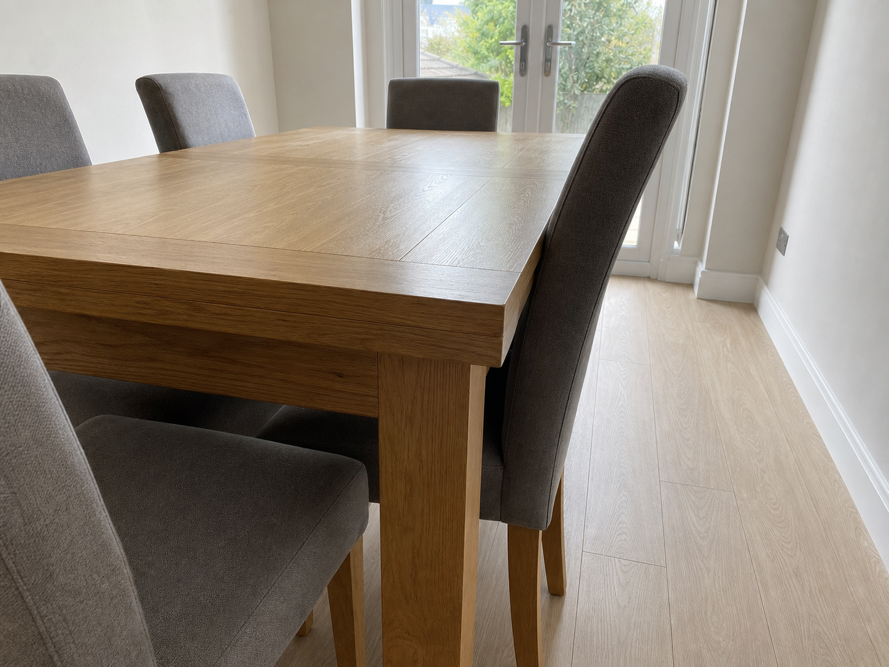
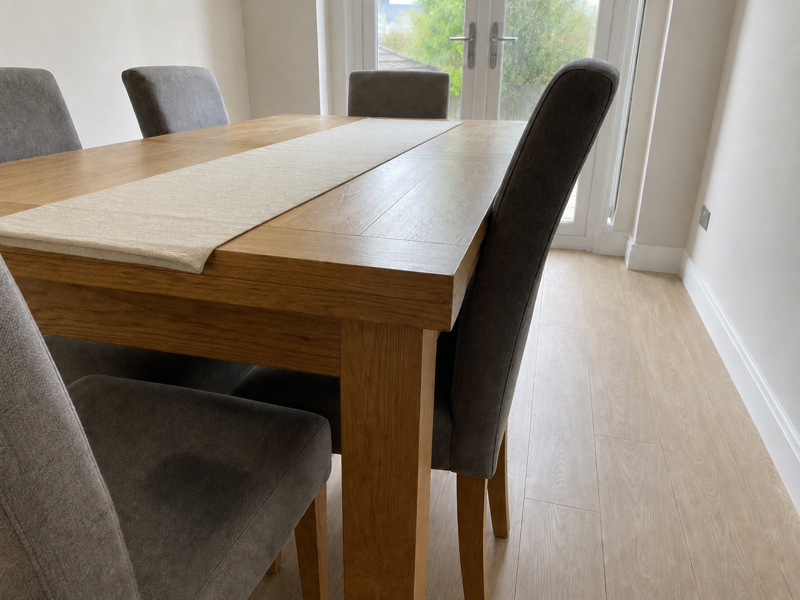
Enumerated changes (the gold)
- new defect — oak tabletop: a small ring mark is newly visible on the tabletopD-condition (retracted — not rendered: Drop D1 or re-shoot.)
- item removed — sixth dining chair: one of the six chairs present at T0 is absent at T1A-wide
- item added — table runner: a plain table runner is newly laid on the dining table
- cleanliness — timber floor: a small dusty area is visible beneath the table at T1D-condition (retracted — not rendered: Drop D4 or re-shoot.)
- worsened — chair upholstery: one grey chair seat has a darker flattened mark than at T0
- item added — small vase: a small plain vase is newly present on the dining tableA-wide
What is actually visible
- D1 absent — No ring mark is rendered on the tabletop.
- D2 clear — The chair at the head of the table at T0 is absent at T1, leaving the table end open to the French doors. Confirmed on a full-resolution crop.
- D3 clear — A plain runner lies along the table at T1 in both views.
- D4 absent — No dusty area is rendered on the timber floor.
- D5 ambiguous — A flattened mark on a chair seat is not resolvable.
- D6 clear — A small grey vase stands on the table at T1.
Gold corrections before scoring
- D1 not rendered — Drop D1 or re-shoot.
- D4 not rendered — Drop D4 or re-shoot.
Asserted unchanged
- same oak table, six chair positions, French doors, pendant light and pale timber floor
- same display items, wall finish, sockets, skirting and camera viewpoint
- no change to table size, room dimensions or door and window geometry
P35-015-T1
Dining room · temporalacceptroom identity holds
Views disagree at the same timepoint
The tablecloth is absent in T1 A-wide (D2) but still on the table in T1 D-condition, so the two T1 frames disagree about the state of the room.
A-wide
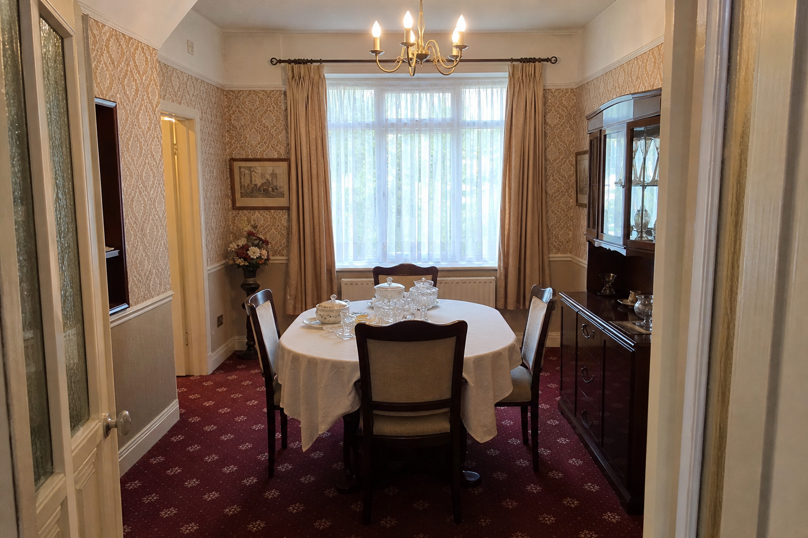
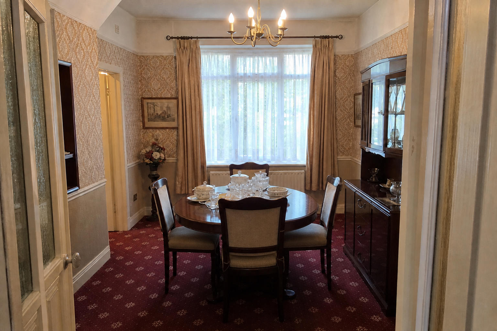
D-condition
Enumerated changes (the gold)
- worsened — table edge: the existing nick on the table edge is wider and more visibleD-condition
- item removed — tablecloth: the tablecloth present at T0 is absent at T1A-wide
- item added — serving bowl: a ceramic serving bowl is newly present on the table
- new defect — patterned wallpaper: a small tear is newly visible in the wallpaper beside the cabinet
- cleanliness — dark dining table: crumbs and a light ring mark are visible on the tabletop at T1D-condition
- immaterial — chair cushion: the same four chair cushions, same fabric material and same count remain on the same four chairs, only their ties are arranged differently (immaterial — reporting this is a false change)
What is actually visible
- D1 ambiguous — The table edge is covered by the cloth in D-condition.
- D2 clear — The tablecloth is gone in T1 A-wide, showing bare polished timber.
- D3 clear — A ceramic serving bowl sits on the table at T1.
- D4 ambiguous — A wallpaper tear beside the cabinet is not resolvable in this pair.
- D5 ambiguous — The tabletop is still covered in the D-condition frame.
- D6 clear — The same four chair cushions remain.
Asserted unchanged
- same dark table, four upholstered chairs, display cabinet, chandelier, patterned wallpaper and carpet
- same doorway, radiator, skirting, chair count and camera viewpoint
- no change to cabinet, wall geometry, floor finish or fixed lighting
P35-016-T1
Entrance hall · temporalacceptroom identity holds
A-wide
D-condition
Enumerated changes (the gold)
- new defect — hall skirting: a short scratch is newly visible on the skirting beside the tiled floorD-condition
- item removed — umbrella stand: the umbrella stand present beside the coat bench at T0 is absent at T1A-wide (retracted — t0 premise wrong: No umbrella stand at T0; drop D2.)
- item added — shoe rack: a narrow shoe rack is newly present beside the glazed doorA-wide
- cleanliness — floor tiles: dust and muddy marks are visible on the entrance tiles at T1D-condition
- worsened — threshold strip: the existing rub on the threshold strip is darker than at T0D-condition
- item added — coat: one plain coat is newly hanging on the open coat benchA-wide
- observed — shoes: Shoes on the bench and floor are rearranged. (found after the render; scored so reporting it is not a false change)
What is actually visible
- D1 ambiguous — A scratch on the skirting is not resolvable.
- D2 absent — No umbrella stand is in the T0 frame.
- D3 clear — A narrow shoe rack stands by the glazed door at T1.
- D4 ambiguous — Dust and mud on the tiles are not separable from the tile pattern.
- D5 ambiguous — Threshold-strip wear is not resolvable.
- D6 clear — An olive coat now hangs on the bench hooks at T1.
Gold corrections before scoring
- D2 t0 premise wrong — No umbrella stand at T0; drop D2.
Asserted unchanged
- same pale walls, tiled floor, glazed door, coat bench, wall hooks, mirror and radiator
- same threshold, skirting, door furniture and camera viewpoint
- no change to hall geometry, fixed fittings or tile layout
Incidental — recorded, not counted against the pair
- shoes: Shoes on the bench and floor are rearranged.
P35-017-T1
Bedroom · temporalacceptroom identity holds
A-wide
D-condition
Enumerated changes (the gold)
- new defect — bed frame: a small dent is newly visible on the bed frameD-condition
- item removed — desk lamp: the desk lamp present at T0 is absent at T1A-wide (retracted — t0 premise wrong: No desk lamp at T0; drop D2.)
- item added — storage box: a plain storage box is newly present beside the wardrobeA-wide
- cleanliness — blue rug: dust and a small paper scrap are visible on the blue rug at T1
- worsened — skirting board: the existing rub on the skirting is darker than at T0D-condition
- item added — bedside book: a plain book is newly present beside the single bedA-wide
What is actually visible
- D1 ambiguous — A dent on the bed frame is not resolvable in this pair.
- D2 absent — No desk lamp is in the T0 frame.
- D3 clear — A plain storage box stands beside the wardrobe at T1.
- D4 clear — A paper scrap and dust lie on the blue rug at T1.
- D5 ambiguous — Skirting wear is not resolvable.
- D6 clear — A book lies on the bed at T1.
Gold corrections before scoring
- D2 t0 premise wrong — No desk lamp at T0; drop D2.
Asserted unchanged
- same single bed, white wardrobe, blue rug, small window, desk and toy storage
- same carpet, skirting, door, radiator, ceiling light and camera viewpoint
- no change to room dimensions, furniture layout or window geometry
P35-018-T1
Dining room · temporalacceptroom identity holds
A-wide
D-condition
Enumerated changes (the gold)
- new defect — chair upholstery: a dark tear is newly visible on one grey chair seatD-condition
- item removed — pendant light: the pendant light present above the table at T0 is absent at T1A-wide
- item added — serving trolley: a small serving trolley is newly present beside the tableA-wide
- cleanliness — oak tabletop: crumbs and two visible rings are present on the tabletop at T1
- worsened — timber floor: the existing scuff beneath the table is darker than at T0D-condition
- item added — place mat: a plain place mat is newly present at one end of the tableA-wide
What is actually visible
- D1 ambiguous — A tear on a chair seat is not resolvable.
- D2 clear — The pendant above the table at T0 is gone at T1.
- D3 clear — A chrome serving trolley stands beside the table at T1.
- D4 ambiguous — Crumbs and rings on the tabletop are not resolvable.
- D5 ambiguous — A floor scuff beneath the table is not resolvable.
- D6 clear — A place mat lies at one end of the table at T1.
Gold corrections before scoring
- D2 spec contradiction — D2 removes the pendant while the unchanged assertions claim the same pendant light. Removing a fixed light fitting is a legitimate enumerated change, but the assertion must be reworded or a reviewer will read it as an identity failure.
Asserted unchanged
- same oak table, six grey chairs, French doors, pale timber floor and pendant light position
- same wall finish, skirting, sockets, door and camera viewpoint
- no change to table size, room geometry or window and door positions
P35-019-T1
Kitchen · temporalrejectroom identity failed
Room identity findings
- A-wide · built-in oven — The same drift as P35-001-T1 from the same parent room: the oven sits lower in the run at T1 with a band of cabinet above it, and the hob has grown and shifted right.
- D-condition · hob and extractor — The T1 frame shows a gas hob with pan supports under a flat stainless extractor. Both A-wide frames and the T0 D-condition frame show a black ceramic hob and a chimney extractor. The kitchen has been re-imagined.
- D-condition · window — The T1 frame adds a Venetian-blinded window on the right that exists in neither T0 frame.
A-wide
D-condition
Enumerated changes (the gold)
- new defect — splashback tile: a hairline crack is newly visible in the tile behind the hobD-condition
- item removed — microwave: the microwave present on the worktop at T0 is absent at T1A-wide
- item added — bread bin: a plain bread bin is newly present on the worktop at T1
- cleanliness — sink: a few water marks and food crumbs are visible around the sink at T1
- worsened — base unit door: the existing lower-edge chip on the base unit door is largerD-condition
- immaterial — dish towel: the same one cotton dish towel, same material and same count remains on the same oven handle, only hanging with a different fold (immaterial — reporting this is a false change) (retracted — t0 premise wrong: There is no dish towel at T0.)
- observed — dish towel: A towel appears on the oven handle at T1. (found after the render; scored so reporting it is not a false change)
What is actually visible
- D1 absent — The splashback behind the T1 hob is a different wall; no hairline crack is present.
- D2 clear — The microwave is gone from the worktop in T1 A-wide.
- D3 ambiguous — A bread bin cannot be confirmed against a re-imagined worktop.
- D4 ambiguous — Water marks around the sink are not resolvable.
- D5 absent — The base-unit door in question is not in the T1 frame.
- D6 absent — No dish towel hangs on the oven handle at T0; one appears at T1.
Gold corrections before scoring
- D6 t0 premise wrong — There is no dish towel at T0.
Asserted unchanged
- same pale units, dark worktop, sink, oven, hob, extractor hood and window
- same room shape, floor, radiator, blind, door, skirting and camera viewpoint
- no other appliance, fitting, object or finish changes
Incidental — recorded, not counted against the pair
- dish towel: A towel appears on the oven handle at T1.
P35-020-T1
Kitchen · temporalacceptroom identity holds
Full-resolution crop confirms the same freestanding cooker, wall units, sockets and splashback.
A-wide
D-condition
Enumerated changes (the gold)
- new defect — cooker side panel: a small dent is newly visible on the side panel of the cookerD-condition
- item removed — countertop kettle: the kettle present beside the sink at T0 is absent at T1A-wide
- item added — draining board: a plastic draining board is newly present beside the sink
- cleanliness — patterned vinyl floor: a few muddy footprints are visible on the floor at T1D-condition
- worsened — base unit plinth: the existing scuff on the plinth is darker and longerD-condition
- immaterial — oven glove: the same one fabric oven glove, same material and same count remains on the same handle, only turned to face the other way (immaterial — reporting this is a false change) (retracted — t0 premise wrong: No oven glove at T0; D6 cannot be an immaterial re-hang.)
- observed — oven glove: A quilted glove hangs on the cooker handle at T1 and none is there at T0. (found after the render; scored so reporting it is not a false change)
What is actually visible
- D1 ambiguous — A dent on the cooker side panel is not resolvable.
- D2 clear — The black kettle on the left worktop at T0 is gone at T1.
- D3 clear — A draining tray sits at the sink at T1.
- D4 clear — Dark scuffed marks appear on the vinyl floor at T1.
- D5 ambiguous — Plinth wear is not resolvable.
- D6 absent — No oven glove hangs on the cooker handle at T0; one appears at T1.
Gold corrections before scoring
- D6 t0 premise wrong — No oven glove at T0; D6 cannot be an immaterial re-hang.
Asserted unchanged
- same wood-effect units, cream laminate worktop, freestanding cooker, sink and patterned floor
- same radiator, window blind, wall clock, door, skirting and camera viewpoint
- no other appliance, fitting, furniture or room geometry changes
Incidental — recorded, not counted against the pair
- oven glove: A quilted glove hangs on the cooker handle at T1 and none is there at T0.
P35-021-CF
Bathroom · counterfactualacceptroom identity holds
One of the strongest pairs: four of six changes are plainly readable and the room holds.
A-wide
D-condition
Enumerated changes (the gold)
- new defect — bath panel: a dark 12cm scuff is present on the lower bath panelD-condition
- new defect — silicone seal: a short split is present in the bath corner silicone sealD-condition
- item added — bath mat: a blue bath mat is present on the floorA-wide
- item removed — hand towel: the hand towel on the rail is absentA-wide
- cleanliness — lower wall tiles: visible splash marks are present on the lower wall tiles
- worsened — bath panel: the panel finish is visibly more worn around the scuffD-condition
What is actually visible
- D1 clear — A dark scuff runs across the lower bath panel at T1.
- D2 ambiguous — The silicone split is not resolvable.
- D3 clear — A blue bath mat lies on the floor at T1.
- D4 clear — The dark hand towel on the rail at T0 is gone at T1.
- D5 ambiguous — Splash marks on the lower tiles are not resolvable.
- D6 clear — The panel finish is visibly worn around the scuff.
Asserted unchanged
- same white suite, grey tiles, glass screen, towel rail, window, bath, basin and WC
- same door, mirror, extractor, floor and camera viewpoint
- no additional sanitary fixture and no changed room geometry
P35-022-CF
Bathroom · counterfactualrejectroom identity failed
Room identity findings
- A-wide · basin and mixer tap — At T1 the vanity carries a plain white slab with no mixer tap and no waste; at T0 it is an inset rectangular basin with a chrome mixer. Confirmed on a full-resolution crop. A sanitary fitting cannot vanish between check-in and check-out.
- A-wide · cross-view contradiction — The T1 D-condition frame shows the basin and mixer intact, so the two T1 views disagree about a fixed fitting.
A-wide
D-condition
Enumerated changes (the gold)
- new defect — vanity drawer: a chipped corner is present on the vanity drawer frontD-condition
- new defect — pale stone tile: a single cracked tile is present beside the showerD-condition
- item added — bath mat: a folded bath mat is present outside the walk-in showerA-wide
- item removed — soap dispenser: the soap dispenser beside the basin is absentA-wide (retracted — t0 premise wrong: No soap dispenser at T0; drop D4.)
- cleanliness — glass shower screen: several water spots are present on the shower glass
- worsened — silicone joint: the silicone joint has visibly darkened discolourationD-condition
What is actually visible
- D1 ambiguous — A chipped vanity drawer corner is not resolvable.
- D2 ambiguous — A cracked tile beside the shower is not resolvable.
- D3 clear — A folded bath mat lies outside the shower at T1.
- D4 absent — No soap dispenser stands beside the basin at T0, so its absence is not a difference.
- D5 clear — Water spotting is visible on the shower glass at T1.
- D6 ambiguous — Silicone discolouration is not resolvable.
Gold corrections before scoring
- D4 t0 premise wrong — No soap dispenser at T0; drop D4.
Asserted unchanged
- same white suite, pale stone tiles, walk-in shower, glass screen, vanity and chrome towel rail
- same window, door, mirror, extractor, drain and camera viewpoint
- no extra sanitary fixture and no changed room geometry
P35-023-CF
Bedroom · counterfactualacceptroom identity holds
A-wide
D-condition
Enumerated changes (the gold)
- new defect — grey carpet: a dark circular stain is present near the radiatorD-condition (retracted — not rendered: Drop D1 or re-shoot.)
- new defect — pale blue wall: a small nail hole and flaked paint are present near the doorD-condition
- item added — single bed: a single bed is present against the far wallA-wide
- item removed — curtain pole: the curtain pole is absent from the sash windowA-wide
- cleanliness — carpet: loose dust and a small paper scrap are present on the carpet
- worsened — skirting board: a rub mark on the skirting is visibly darkerD-condition
What is actually visible
- D1 absent — No circular stain is rendered on the carpet by the radiator.
- D2 ambiguous — A nail hole and flaked paint near the door are not resolvable.
- D3 clear — A metal-framed single bed stands against the far wall.
- D4 clear — The curtain pole at T0 is gone at T1.
- D5 clear — A paper scrap lies on the carpet at T1 in both views.
- D6 ambiguous — Skirting wear is not resolvable.
Gold corrections before scoring
- D1 not rendered — Drop D1 or re-shoot.
Asserted unchanged
- same pale blue walls, grey carpet, white radiator, sash window, wardrobe and doorway
- same sockets, skirting, ceiling pendant, threshold and camera viewpoint
- no changed room dimensions, window geometry or fixed fittings
P35-024-CF
Bedroom · counterfactualacceptroom identity holds
The strongest pair in the set: four changes plainly readable, identity intact, no incidental drift worth recording.
A-wide
D-condition
Enumerated changes (the gold)
- new defect — cream carpet: a dark stain is present beside the double bedD-condition
- new defect — chest of drawers: two deep scratches are present beside the top drawer handleD-condition
- item added — laundry basket: a woven laundry basket is present beside the wardrobeA-wide
- item removed — bedside lamp: the bedside lamp is absent from the bedside tableA-wide
- cleanliness — bedside table: a visible dust mark and loose belongings are present on the bedside table
- worsened — headboard: the headboard has a darker worn patch near one cornerD-condition
What is actually visible
- D1 ambiguous — A carpet stain beside the bed is not resolvable.
- D2 clear — Two long scratches run beside the top drawer handle at T1.
- D3 clear — A woven laundry basket stands beside the wardrobe at T1.
- D4 clear — The right-hand bedside lamp at T0 is gone at T1.
- D5 clear — Loose belongings appear on the bedside table at T1.
- D6 ambiguous — A worn headboard corner is not resolvable.
Asserted unchanged
- same double bed, headboard, oak wardrobes, cream carpet, bay window and bedside tables
- same chest of drawers, mirror, radiator, curtains, sockets and camera viewpoint
- no changed room shape, door, floor finish or window geometry
P35-025-CF
Living room · counterfactualacceptroom identity holds
A-wide
D-condition
Enumerated changes (the gold)
- new defect — grey sofa: a dark circular stain is present on the sofa seatD-condition
- new defect — carpet: a visible snag is present in the carpet near the coffee tableD-condition
- item added — floor lamp: a floor lamp is present beside the sofaA-wide (retracted — t0 premise wrong: The floor lamp is present at T0; drop D3.)
- item removed — armchair: the armchair is absent from its position at T0A-wide
- cleanliness — oak coffee table: crumbs and drink rings are present on the coffee table
- worsened — cream throw: the throw has a visibly darker worn patchD-condition
- observed — cream throw: The throw moves from the armchair to the sofa arm, which follows from the enumerated armchair removal. (found after the render; scored so reporting it is not a false change)
What is actually visible
- D1 ambiguous — A stain on the sofa seat is not separable from shading.
- D2 clear — A dark snag is visible in the carpet near the coffee table.
- D3 absent — A floor lamp is already present at T0, so it is not a counterfactual difference.
- D4 clear — The armchair present at T0 is absent at T1.
- D5 ambiguous — Crumbs and rings are not separable from existing tableware.
- D6 ambiguous — The throw has moved to the sofa arm, so a worn patch cannot be compared.
Gold corrections before scoring
- D3 t0 premise wrong — The floor lamp is present at T0; drop D3.
Asserted unchanged
- same grey sofa, armchair position, oak coffee table, television unit, television and carpet
- same cream throw, glazing, balcony view, walls, door positions and camera viewpoint
- no change to room shape, furniture upholstery, visible exterior or fixed fittings
Incidental — recorded, not counted against the pair
- cream throw: The throw moves from the armchair to the sofa arm, which follows from the enumerated armchair removal.
P35-026-CF
Living room · counterfactualacceptroom identity holds
Identity holds, but only one enumerated change is observable: thin delta signal.
A-wide
D-condition
Enumerated changes (the gold)
- new defect — armchair upholstery: a torn seam is present on the armchair upholsteryD-condition
- new defect — painted skirting: a long scuff is present on the skirting beside the doorD-condition
- item added — magazine stack: a stack of magazines is present on the coffee tableA-wide
- item removed — television remote: the television remote is absent from the coffee tableA-wide
- cleanliness — television unit: a visible dust line is present on the television unit
- worsened — carpet: a pre-existing faint mark on the carpet is visibly darkerD-condition
What is actually visible
- D1 ambiguous — A torn seam on the armchair is not resolvable.
- D2 ambiguous — A skirting scuff by the door is not resolvable.
- D3 clear — Magazines and an open book sit on the coffee table at T1.
- D4 ambiguous — The remote cannot be tracked on the cluttered table.
- D5 ambiguous — A dust line on the television unit is not resolvable.
- D6 ambiguous — The carpet mark is not resolvable.
Asserted unchanged
- same sofa, armchair, coffee table, television unit, television, carpet and cream throw
- same window, door, walls, skirting, sockets and camera viewpoint
- no change to furniture count except the enumerated armchair state and no changed room geometry
Incidental — recorded, not counted against the pair
- camera: The T1 D-condition view is shifted right; the fireplace, tiled insert, hearth and plant are unchanged on a full-resolution crop.
P35-027-CF
Living room · counterfactualacceptroom identity holds
Identity holds, but only one enumerated change is observable: thin delta signal.
A-wide
D-condition
Enumerated changes (the gold)
- new defect — window sill: a chipped corner is present on the painted window sillD-condition
- new defect — door leaf: a deep scuff is present on the lower door leafD-condition
- item added — floor cushion: a floor cushion is present beside the armchairA-wide
- item removed — plant pot: the plant pot is absent from the window sillA-wide (retracted — t0 premise wrong: No plant pot at T0; drop D4.)
- cleanliness — window glass: finger marks are present on the lower window glass
- worsened — sofa arm: the sofa arm has a visibly darker worn patchD-condition
What is actually visible
- D1 ambiguous — A chipped sill corner is not resolvable.
- D2 ambiguous — No door leaf is in frame.
- D3 clear — A floor cushion lies beside the shelving at T1.
- D4 absent — No plant pot stands on the sill at T0.
- D5 ambiguous — Finger marks on the glass are not resolvable.
- D6 ambiguous — A worn patch on the sofa arm is not resolvable.
Gold corrections before scoring
- D4 t0 premise wrong — No plant pot at T0; drop D4.
Asserted unchanged
- same sofa, armchair, coffee table, television unit, carpet, window and door
- same walls, skirting, sockets, radiator, exterior view and camera viewpoint
- no other object, fitting, finish or room geometry changes
P35-028-CF
Dining room · counterfactualacceptroom identity holds
Four changes plainly readable; identity intact.
A-wide
D-condition
Enumerated changes (the gold)
- new defect — oak tabletop: a deep dark ring mark is present on the tabletopD-condition
- new defect — chair upholstery: a torn seam is present on one grey chair seatD-condition
- item added — table runner: a table runner is present on the dining tableA-wide
- item removed — sixth dining chair: one chair is absent, leaving five chairs around the tableA-wide
- cleanliness — timber floor: muddy footprints are present on the timber floor
- worsened — table leg: the table leg has a visibly darker rub markD-condition
What is actually visible
- D1 clear — A dark ring mark is visible on the tabletop at T1.
- D2 clear — A torn seam runs down a grey chair seat at T1.
- D3 clear — A runner lies along the table at T1.
- D4 clear — One chair is missing at T1, leaving five around the table.
- D5 ambiguous — Footprints on the timber floor are not resolvable.
- D6 ambiguous — A rub on the table leg is not resolvable.
Asserted unchanged
- same oak table, French doors, pendant light, timber floor and dining-room layout
- same chair positions except the enumerated missing chair, display items, skirting and camera viewpoint
- no changed room dimensions, fixed lighting or door and window geometry
P35-029-CF
Dining room · counterfactualacceptroom identity holds
Views disagree at the same timepoint
The tablecloth is absent in T1 A-wide (D4) but still on the table in T1 D-condition, the same conflict as P35-015-T1 from the same parent room.
A-wide
D-condition
Enumerated changes (the gold)
- new defect — table edge: a chipped section is present on the front table edgeD-condition
- new defect — patterned wallpaper: a torn patch is present in the wallpaper beside the cabinetD-condition
- item added — serving bowl: a ceramic serving bowl is present on the tableA-wide
- item removed — tablecloth: the tablecloth is absent from the tableA-wide
- cleanliness — dark dining table: crumbs and two rings are present on the tabletop
- worsened — chair back: one chair back has a visibly darker scuffD-condition
What is actually visible
- D1 ambiguous — The table edge is covered by the cloth in D-condition.
- D2 clear — A pale torn patch is visible in the wallpaper above the dado beside the cabinet at T1. Confirmed on a full-resolution crop.
- D3 clear — A ceramic bowl sits on the table at T1.
- D4 clear — The tablecloth is gone in T1 A-wide.
- D5 ambiguous — The tabletop is still covered in the D-condition frame.
- D6 ambiguous — A scuff on a chair back is not resolvable.
Asserted unchanged
- same dark table, four upholstered chairs, display cabinet, chandelier, patterned wallpaper and carpet
- same doorway, radiator, skirting, chair count and camera viewpoint
- no changed cabinet, floor finish, room geometry or fixed lighting
P35-030-CF
Bedroom · counterfactualacceptroom identity holds
Four changes plainly readable; identity intact.
A-wide
D-condition
Enumerated changes (the gold)
- new defect — bed frame: a deep dent is present on the bed frameD-condition
- new defect — blue rug: a dark snag is present in the blue rugD-condition
- item added — storage box: a storage box is present beside the wardrobeA-wide
- item removed — desk lamp: the desk lamp is absent from the deskA-wide (retracted — t0 premise wrong: No desk lamp at T0; drop D4.)
- cleanliness — blue rug: dust and a paper scrap are present on the blue rug
- worsened — skirting board: a visible darkened wear patch is present on the skirtingD-condition
What is actually visible
- D1 clear — A deep dent is visible on the white bed frame panel at T1.
- D2 clear — A dark snag is visible in the blue rug at T1.
- D3 clear — A storage box stands beside the wardrobe at T1.
- D4 absent — No desk lamp is in the T0 frame.
- D5 clear — A paper scrap lies on the rug at T1.
- D6 ambiguous — Skirting wear is not resolvable.
Gold corrections before scoring
- D4 t0 premise wrong — No desk lamp at T0; drop D4.
Asserted unchanged
- same single bed, white wardrobe, blue rug, small window, desk and toy storage
- same carpet, skirting, door, radiator, ceiling light and camera viewpoint
- no changed room dimensions, furniture layout or window geometry